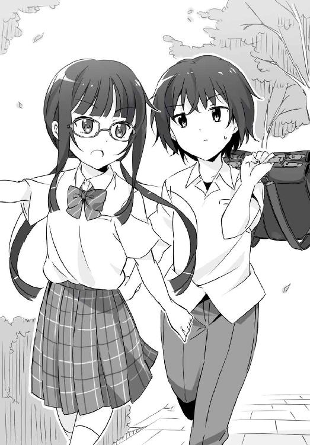
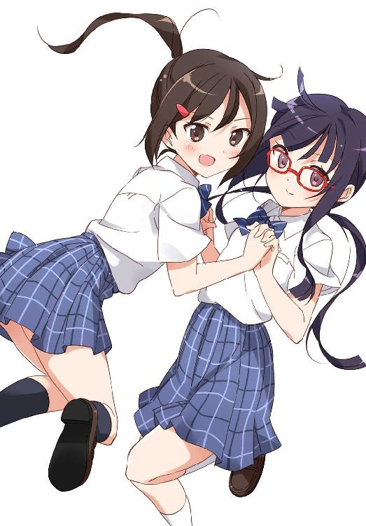

| 髪の毛探偵 石神くん ２ ～茶パツおばけの肝だめし～ (impress QuickBooks) | |
| 晴海 まどか | |
| (2014) | |
髪の毛探偵 石神くん ２
～茶パツおばけの肝だめし～
晴海まどか
髪の毛探偵 石神くん◎目次
第１巻（２０１４年12月３日発売）
ひとりぼっちの桜の亡霊▼１．調査依頼は突然に／２．開始早々調査難航／３．拾った本の借主／４．彼女が切った理由／５．ロングヘアの事情
第２巻（本書）
第３巻（２０１４年12月10日発売）
おかっぱかぐや姫の仮装行列▼１．おかっぱかぐや姫／２．なくなったカツラ／３．彼女である必然性／４．話したかった先生／５．なくなっていない／６．今度こそかぐや姫／エピローグ
ひとりぼっちの桜の亡霊
６．亡霊が抱える事情
狩野さんはブレザーのポケットにおもむろに手を入れると、リップクリームを取り出した。ピンク色の小さな筒のキャップを外そうとして、でも気が変わったらしい。やっぱりポケットに戻してため息をついた。
「......つまり石神くんは、」
狩野さんはくいっとメガネを上げた。
「私が、その桜の亡霊だって言いたいんだ？」
頷いて返した俺に、狩野さんは口の端に笑みを浮かべる。
「冗談だって言うなら今のうちだよ、石神永助くん？」
さっそく逃げ出したい気持ちになったものの。ごくっとつばを飲んで覚悟を決めた。
「桜の亡霊の花びらのいたずら。あれ、二回とも風紀委員会の集まりがある日に起きてるんだ。最近それがあったのが、今週の月曜日。狩野さんが本と髪の毛を拾ったっていう日だ」
そんなの、と狩野さんは嘆息する。
「偶然じゃない？」
「かもしれない。でも、多田先輩に、沢井さんと話していたのが大体何時くらいだったのか訊いてみたんだ。ちょうど、風紀委員会の会議が終わった三十分後くらいだった」
沢井さんは時間を指定して多田先輩を呼びだしたので、時間は間違いないはずだった。
「となると、そもそも狩野さんがその時間まで特別校舎に残っていた理由がわからない。もし何か理由があって残ってたんだとしたら、花びらのいたずらに気づいたはずだ。なのに、そんな話は一言も聞いてない」
「私が本と髪の毛を拾いに行っている間に、花びらはまかれたんじゃない？」
「それはおかしいよ。だってその日、花びらがまかれてるのを最初に見つけたの、狩野さんじゃないか」
オカ研の資料には、第一発見者として狩野さんの名前が書かれていたのだ。
「オカ研、そんなことやってたの？」
目を丸くした狩野さんに俺は畳みかける。
「それに、多田先輩に話を聞きに行ったとき。狩野さん、『本と一緒に落ちていた髪の毛』って言ったよね。なんで本に挟まれてたって言わなかったのか、不思議だったんだ」
「それは――」
「本には髪の毛が挟まれてなかったってことを多田先輩が知ってるって、狩野さんにはわかってたんだよね？」
狩野さんはメガネの奥から丸い目でじぃっと俺を見て。
ゆっくり、両手を上げた。
「お手上げ」
狩野さんの言葉に、肩の力が抜けた。俺も相当気ばっていたようだ。
「わかってたけど、石神くん、記憶力いいんだね。第一発見者には、なりたくてなったわけじゃないんだ。廊下に人が来ちゃったから、仕方なくそういうことになっちゃっただけで」
だろうなと俺も思っていた。
「まさか、石神くんにバレちゃうとはなぁ。ちょっと想定外だよ」
「こっちだって想定外だ」
あはは、そうだね。あくまで狩野さんは明るい。
「石神くん、頭悪くないんだし、もうちょっと普通にしてればいいのに。本当に残念」
「悪いけど、これが俺の普通だ」
言ってから、補足する。
「髪の毛が短くなったから普通の状態じゃないかもしれないけど」
俺の言葉に、狩野さんはなおも笑う。明るすぎて、逆に心配になってきた。
「どうして桜の亡霊のイタズラなんてしたの？」
「どうしてだと思う？」
うーん。
「......真面目すぎてストレス溜まってた、とか」
「そんなにやわじゃないから」
まぁ、確かにそうだろうな。
正直なところ、俺には狩野さんのことなんてまったくわからないけど。
「狩野さんには、狩野さんなりの事情があったってこと？ 俺には俺の事情があって、沢井さんには沢井さんの事情があったみたいにさ」
狩野さんは答えず、目を細めて若葉生い茂る桜の木を見上げた。
そのときだった。
どこからか、バイブレーションの音が聞こえた。
狩野さんがはっとしたようにポケットの中から携帯電話を取り出した。みるみるうちに眉間にしわが寄る。
「どうかしたの？」
「ボランティアサークルの人」
狩野さんはこちらに背を向け、電話を取った。はい、もう放課後なんで大丈夫です、なんてやり取りが聞こえてくる。
ふいに、その声音が変わったのに気づいた。
「はい、今から行きます」
通話を切った狩野さんがこちらを向いた。顔から血の気が引いている。
「おばあちゃんが、病院に運ばれたって」
◆
足首に包帯を巻いたおばあちゃんは、血相を変えてやってきた狩野さんを見てからから笑った。
「やぁだぁ、麗奈ちゃんったら。大げさねぇ」
ころころしていて、ふわふわした雰囲気のかわいらしいおばあちゃんだった。
狩野さんは気が抜けた様子で、おばあちゃんの隣にストンと腰かけた。なんだか勢いでついてきてしまった俺は、どうしてよいものやらわからなくて、待合室のすみっこに立ち尽くすしかない。
「ごめんねぇ、麗奈ちゃん。わざわざ来てもらっちゃって」
ボランティアサークルのスタッフらしい女の人がやって来た。狩野さんがぺこっと頭を下げる。俺もそれにならって頭を下げたら、スタッフの人は中田さんと名乗った。ストレートパーマをかけているらしい髪をついつい観察してしまい、狩野さんににらまれて視線を逸らした。
「おばあちゃん、ベッドから立ち上がったときに転んじゃったんだって」
中田さんにそう訊くと、気をつけなきゃダメだよ、と狩野さんはおばあちゃんに注意する。
「歳には勝てないからねぇ」
おばあちゃんは怒られているのになんだか嬉しそうで、狩野さんの頭をずっとなでている。
「そろそろね、潮時かと思ってるんだよ」
おばあちゃんの言葉に、狩野さんと中田さんはそろってきょとんとした。
「息子にね、一人暮らしは心配だから一緒に住もうって言われてたんですよ」
「まぁ、そうなんですか」
「でも場所がね、名古屋でね。遠いでしょ？ ここを出るのが嫌だったんだけどねぇ......」
「息子さんたちもその方が安心でしょうしね」
「この歳じゃ、わがままも言えないからねぇ」
中田さんとおばあちゃんの会話を、狩野さんは表情を失くして聞いている。
「桜の木も今年で見納めみたいだし、ちょうど良かったかなって気もしていてね」
「おばあちゃん、桜の木のこと知ってたの？」
目をしばたたいた狩野さんの問いに、おばあちゃんはくしゃっと笑った。
「老人っていうのは地獄耳なんだよ」
気が抜けたのか、今にもへたり込んでしまいそうな狩野さんの両手を、おばあちゃんはふんわりと包み込んだ。
「さびしくなるねぇ、麗奈ちゃんに会えなくなると」
おばあちゃんの手を握り返すと、そんなことないよ！ と狩野さんは強く言い放った。
「名古屋なんて、新幹線ですぐなんだよ？ 遊びに行くよ。嫌だって言っても行っちゃうから！ だから......だから、早く良くならなきゃダメだよ。わかった？」
真っ赤な目をした狩野さんは、いつものしっかり者じゃなくて、ただただ大好きなおばあちゃんを心配する女の子の顔だった。
狩野さんと一緒に病院を出た。まだまだ日は高くて、さっきまでの慌ただしさが嘘みたいな陽気な天気だった。
しばらく無言で歩いていた狩野さんだったが、病院がすっかり見えなくなった辺りで、三歩後ろを歩いていた俺をふり返った。
「特別校舎の改修工事をしたせいで、教職員用の駐車場が狭くなっちゃったでしょ？」
唐突に切りだされた話に、俺は無言で頷いた。
「裏庭を潰して駐車場を広げるって話、聞いたことある？」
「だから桜の霊が怒ってる、ってやつだろ」
「そう、そうなの」
狩野さんは、まるで気が抜けたかのようにゆっくりと息を吐き出した。
「あの桜の木をここから移動させたら祟りがある――って思わせたかった、って言ったら、信じてくれる？」
「信じてほしいなら信じるよ」
狩野さんの顔から笑みが消え、視線がわずかに伏せられた。
「さっきのおばあちゃんの家がね、学校のすぐ隣なの。桜の木の近くの、塀の向こう。おばあちゃん、毎年、桜が咲くの、すごく楽しみにしてたんだよ」
「家で花見ができたんだ」
うん、と頷いた狩野さんの顔は寂しげだった。
「楽しみなものが減っちゃうのは、悲しいよ」
呟くようにそう言って。あーあ！ と狩野さんは伸びでもするような少し大きな声を出すと、リップクリームを取り出して今度こそ唇に塗った。
「ほんと、ばかみたい」
で？ と狩野さんはステップを踏むようにくるっと回って、再び俺の前に立ちふさがった。スカートがふわっと浮かび上がって、すぐに元に戻る。
「私のこと、オカ研に言うの？」
思いもよらない言葉に少し考えてしまった。
「そうしてほしいならそうするけど......そのつもりはもともとなかった」
「え、そうなの？」
再び歩きだし、狩野さんと並ぶ。
「むしろ、言わない方がオカ研のやつらにはいいかなって。夢を壊すことはないだろ」
「はは。ま、桜の花びらはもうばらまかれることはないだろうけどね」
「でも、なんで造花なんだよ」
「しょうがないじゃん。桜の季節じゃないんだから」
和樹の読みが当たっていたらしい。
そっかそっかー、といくらか表情を明るくして。そういえば、と狩野さんは俺を見た。
「桜の亡霊が出るって話はどうなの？」
狩野さんの質問の意図がわからず、え？ と訊き返す。
「白い人影が現れたってやつ。あっちはオカ研は何か掴んでたりしないの？」
思わず足を止めた。
「あれも狩野さんの仕業じゃないの？」
まさかぁ。狩野さんは笑った。
「さすがに先生方の車をパンクさせたりはしてないよ、私」
俺はその足で学校へ戻り、まっすぐに特別校舎に向かった。特別校舎の最奥、裏庭に面した位置にある教室。
第一理科室の手前、理科準備室の前で足を止めた。一回深呼吸をして、ドアをノックする。
はい？ といういつもののんびりした返事。失礼します、と俺はドアを引いた。
雑然とした理科準備室の奥で、いつものように奥先生が入り口に背を向けて座っていた。あいかわらず、視線は手もとの資料に落としたままだ。
「奥先生に、訊きたいことがあるんです」
奥先生はゆっくりと顔を上げてこちらをふり返った。
「なんだね、ロン毛くん」
「石神です。それに、今はロン毛じゃないです」
「そうなの？」
奥先生はメガネの奥で目を細めた。
「それじゃあ、僕はどうやって君を認識したらいいのかな」
「普通に、顔を覚えてくださいよ」
かは、と奥先生は笑った。笑われてから、俺が言う台詞じゃなかったなと内心反省する。
「それで？ 今日はどうかしたの」
「四月に現れた白い人影って、もしかして奥先生ですか？」
単刀直入に訊いた。奥先生は首を傾げた。なので、俺はその日付を述べた。
「あぁ、その日」
奥先生はぽんっと手を叩く。
「何日か前に、白い人影を見なかったか、と君が訊いてきた日のことか」
「先生が、桜の亡霊だったんですか？」
「何のことかね？」
奥先生は体の前で両腕を組み、悠然と俺を見ていた。楽しんでいるようにすら見える。こんな表情をした奥先生を、俺は初めて見た。
「じゃあ......質問を変えます」
「いい心がけだ。別の角度からのアプローチ、というやつだね」
「先生方の車をパンクさせたのは、奥先生ですか？」
すぐに返事はなく、空気が硬直したように感ぜられた。
そして、数秒の間のあと。
奥先生はゆっくりと口を開いた。
「元・ロン毛くんは、どうしてそう思うんだい？」
「先生が、白い人影が現れたっていう時間を知っていたからです」
白い人影について先生に訊いたとき。俺は日付しか教えなかったのに、先生は人影が現われた時間を特定できているような物言いだった。
「その時間とやらを、私が知っていたらおかしいのかね？」
「桜の亡霊について一番くわしい、オカルト研究会の連中もわからないと言ってました」
ほんの少しの間。胃がキリつくような沈黙。
――すると。
奥先生は、歯を見せてにかっと笑った。そうか。そうかそうか。
「一本取られたなぁ」
奥先生は破顔した。声を立てて顔中で笑っている。こんなに表情が変わる人だったのかと、そのとき初めて知った。
桜の亡霊。白い人影。白衣の奥先生。奥先生は、自分が桜の亡霊なんて呼ばれていたことは、もしかしたら知らなかったのかもしれない。
「君は、黙っていられなかったんだなぁ、自分が気づいてしまったことを」
奥先生は、一人でいるのが普通の人なんだと思っていた。誰も寄せつけない、理科室の番人なんだと。それでいいと思ってるんだと。
でも。
本当は、そうじゃなかったのかもしれない。一人で抱えきれない何かがあったのかもしれない。こっそりほかの先生の車をパンクさせてしまうような、そんな何かが。
俺も、誰も、なんにも知らなかった。そんな奥先生に気づかなかった。気づこうともしなかった。
――周りも石神くんも、どんどん鈍くなっちゃうと思うんだ。
狩野さんの言葉が、今ならすごくよくわかる。
「なんか......すごく、悪いことした気分になったんです」
「君が？」
頷いた。
「俺、もうすぐ肩書きだけは部長になっちゃうし。科学研究会、ちゃんと奥先生に訊いて、色々活動したらよかったんじゃないかって」
「そんなの、僕も君も面倒だよ」
「面倒でも多分、やるべきだったんです」
そっかぁ。奥先生は天井を見つめて、呟いた。
「そうなのかなぁ......」
首を傾げる奥先生は、なんだかすごく人間臭かった。気味の悪い理科室の番人なんかじゃない。そんなこと、俺は最初からわかっていたはずなのに。
奥先生はゆっくりと立ち上がった。
「じゃあ、ちょっと、怒られてこようかな」
君はもう帰っていいよ。奥先生にそう促され、俺は戸惑いつつも、ぺこっと頭を下げて廊下に出た。
ドアを閉めようとした瞬間、奥先生に声をかけられた。
「ありがとうね、石神くん」
インターミッション １
翌月曜日のことだった。
朝一番に、沢井さんが二年三組の教室までやってきて、俺に頭を下げた。
「この間は、ごめん」
俺は土曜日に行った美容院で、ロン毛だった面影など微塵もない髪型にされてしまったあとだった。これはこれで「お前フツーすぎるだろ！ めっちゃ地味顔！」なんて和樹に爆笑され、もはや何をどうしたらいいのか、ますますもってわからなくなってしまっていた。
頭を下げ続ける沢井さんに、こっちも悪かったし、と俺も謝った。ビニール袋に入った髪の毛は、俺なりに供養した上で燃えるゴミとして捨てた。
顔を上げた沢井さんは気まずそうに、実は、と言った。
「あのあと、狩野さんに怒られたんだ」
教室を見返した。狩野さんは素知らぬ顔で、友人たちとおしゃべりに興じている。
その日の放課後、俺は狩野さんに声をかけた。
「......なんで、私をここにつれて来るのよ」
俺が狩野さんをつれてきたのは、駅前のドラッグストアだった。
まっすぐにシャンプーコーナーに向かった。ここに来る前から決めていたシャンプーとトリートメントを棚から取って、そのままレジへ持っていく。
怪訝な顔で俺のあとをついてきた狩野さんに、受け取ったばかりのレジ袋を渡した。
「狩野さんは髪が太くてしっかりしてるから、あまりしっとりしないシャンプーを使った方がいい。髪が重くなる」
「どういうつもり？」
「お礼」
レジ袋を素直に受け取ったのち。狩野さんはケラケラと笑いだした。
「やっぱりヘンタイだね」
失礼なやつだ。
一緒に店を出て、ちんたらと帰路につく。
「そういえば、この間のお姉さんいなかったね」
今日は休みなのかな。そう首を傾げる狩野さんに、一つ教えてやることにした。
「あのお姉さんが、近所に住んでるガン治療してたお姉さん」
狩野さんはしばし絶句した。
「まったく元気そうだったじゃん」
「元気になったんだよ」
大通り沿いに出た。車がびゅんびゅんと走り去る音で少しうるさい。狩野さんが先ほどよりも少し声をはり上げた。
「じゃあ、もう髪を伸ばす必要なかったんじゃない？」
「長い方が慣れてる」
「短い方に慣れるんじゃない？ そのうち」
「俺は絶対に髪を伸ばす」
「でも、今の方が爽やかだよ」
まさかの単語に今度は俺が絶句した。
「何、その顔は」
「俺に対して、そんな形容詞を使うやつがいるとは思わなかった」
「あのねぇ、自分を一体何だと思ってるの。一応人間なんだからさ」
「一応ってなんだ、一応って」
車道が赤信号になって、大通りの喧騒がほんの少しだけ遠のいた。横断歩道のところで、どちらともなく、立ち止まる。
「......俺が爽やかでも、誰も嬉しくないだろ」
えー、そうかな。狩野さんはくるっとふり返った。
「私はいいと思うけどなぁ」
湿気を含んだ空気に、梅雨が近づいてくるのを感じる。
季節が変わっていくように、俺も変わっていくんだろうか。
歩行者信号が青になって、歩きだした狩野さんの髪が生温い風にふわっとなびいた。そのまっすぐな髪にとっさに手を伸ばしかけ、中途半端に空を掴んだ俺の手を見て狩野さんは笑った。
◆
それから一週間経って、六月になった。関東は梅雨入りして、学校の制服も夏服に変わった。図らずしも、六月の頭髪検査はクリアできそうだと思っていた矢先だった。
奥先生が突然、学校に来なくなった。
顧問がいなくなったので科学研究会は一時的に活動休止になることになった、代わりの顧問は現在検討中だ、と連絡してくれたのは東先生だった。放課後になって、教室を出ようとしたところで呼び止められた。
活動休止も何も、活動なんてそもそも何もしてなかったわけで。むしろそういう連絡を俺にしてくれる学校は、なんて律義なところなんだと思った。
頷くだけで、俺は東先生に何も返せなかった。
去っていく東先生の背中を見送っていたら、狩野さんがひょこっと廊下に顔を覗かせた。辞めたわけじゃないらしいよ、と教えてくれる。
「長期休暇だって、先生方が職員室で話してるの聞いたよ」
奥先生が、どんな風に怒られて、そういうことになったのかはわからない。追いかけて、東先生に訊けばわかるのかもしれないけど。それを俺がやるのは、なんとなく違うような気もした。
「石神くんのせいじゃないよ」
先回りしたような狩野さんの言葉に、わかってるよ、と答えた声は無意識のうちに少し不機嫌なものになってしまう。狩野さんは奥先生がやったことを知っている。せっつかれてつい話してしまったのだが、今さらながらそのことを後悔した。
――君は、黙っていられなかったんだなぁ。
耳の奥で、奥先生の言葉が蘇る。
息苦しさをごまかすように、窓の外を見やった。灰色の雲が垂れこめている。天気予報だとこれから雨になるそうだ。
短い自分の髪に手ぐしを入れて、湿気を含んだ感触にげんなりする。
ユーウツだ、と思った。
茶パツおばけの肝だめし
１．六月の肝だめし
日本に限らず、世界の髪の歴史をひも解けば、長髪の時代が長かったことは語るまでもあらず。長髪、というか、正確には結髪の時代だけど。日本なら江戸時代の日本髪、十八世紀フランスならマリー・アントワネットの後頭部が肥大化したみたいな髪型を思い浮かべてもらいたい。そして、髪を結うにはそこそこ長い髪の毛が必要だ。
というわけで、現代で一般的な短い髪は、まだまだ歴史が浅いのだ。髪を切ることを『髪を断つ』って表現することもあるくらいで、女だったら女を捨てることと、男だったら俗世との縁を切ることと、かつてはイコールだった。だから出家すると頭を丸めるわけだ。そんなことを考えて、不本意にも現在髪が短くなってしまっている俺は、やっぱり髪を伸ばす方向で今後もがんばろうと改めて誓うのだった。
......ちょっと話が逸れた。
まぁつまり話を戻すと、長髪が主流だった時代の方が長いってことが言いたい。
だから、『四谷怪談』のお岩さん、最近なら映画『リング』の貞子などなど、日本のおばけのイメージが黒髪長髪でもなんら不思議はない。ショートヘアのおばけなんてあんまり見たくないし迫力が足りない気がする。やっぱり長髪の力はすごい。
でもって俺は、前から常々、そういうおばけの髪の毛というものに興味があって、それを見たいと思ってはいたけど。
オカ研ことオカルト研究会主催の肝だめし。まさかそこでそんなものに遭遇するなんて、思ってもみなかった。
◆
午後九時前。
塾や習いごとの類には何にも通っていない俺がこの時間に外を出歩くことは滅多にない。といった意味では、夜の町は新鮮だった。とはいえ、昼間の方がいいなと思う。黒髪は闇と紛れがちで判別しにくい。
町内にある、この辺りではわりと大きな稲浜神社。俺はそのすぐ近くにある児童公園を覗いた。集合時間までまだ十分くらいあったし誰もいないかもと思っていたが、ブランコに女子が二人座っているのが見えた。
そのうちの一人がこちらに手をふっている。少し近づいて、赤いセルフレームのメガネが見えて誰だかわかった。
狩野さんだ。
「石神くん、早いね」
まぁ、とかなんとかごにょごにょ答え、ブランコの少し手前で立ち止まった。
当然のことながら、狩野さんは私服姿だった。えりつきの薄水色のシャツにジーパンと、あいかわらずシンプルでまじめなキャラを崩さない格好だ。長そでのシャツは手首のボタンまできっちりと留められている。だが、俺が狩野さんをすぐに判別できなかった理由は私服だったからじゃない。
「何？」
まじまじと見てしまっていたらしい。あからさまに眉を寄せる狩野さんに、なんでもないです、と答えて顔を逸らしつつ。こっそり視線だけ戻す。
学校では常にきつく二つに結っている髪が、ストンと下ろされていた。
狩野さんの髪は、最高にいい、ってわけじゃない。手入れとかブラッシングとか、そこまで丁寧にしてそうな感じでもない。でも、たとえて言うなら。
放牧だ。
放牧されてる家畜みたいに、自由奔放で元気って感じで、これはこれで悪くはない。普段から下ろしてればいいのに。髪っていうのは風に遊ばれてなんぼじゃないか。校則って本当になんなんだ、忌々しい。男子の髪型にしても自由度がなさすぎるし。髪の自主性を重んじろ！
「石神くん、今、麗奈の髪に見とれてたでしょ？」
その言葉にぎょっとした、のは俺だけじゃなくて狩野さんもだった。狩野さんににらまれてふるふる首をふる。......見てたのは本当だけど。
声の主は、狩野さんの隣でブランコに座っていた女子だった。七分そでのクリーム色のワンピース姿。首を巡らせるようにしてじと目で俺を見ている。
外灯に照らしだされているのは、焦げ茶色のストレートヘアだった。狩野さんと同じくらい、肩甲骨に届く長さだ。茶色っぽいのは天然みたいだけど、まっすぐな髪の表面が少々パサついているのが気になる。設定を高温にしすぎているヘアアイロンでも使っていそうな見た目だ。
この長さってことは、学校では校則もあるし結んでるに違いない――あ、いつもはポニーテールか。頭の高いところで揺れる焦げ茶色のポニーテールを思い出し、ようやく誰だか思い当たった。
「園村さん？」
「何、今気づいたの？ 失礼なやつだな」
園村さんは、いかにも気が強そうな目尻が上がり気味の目をまたたくと、唇をへの字に曲げた。園村さんはクラスメイトで、そりゃ確かに失礼な話だった。
「髪型が違ってたから......」
「違ってたって、髪下ろしてるだけなんだけど」
髪をアップにするのと下ろしてるのと、どれだけ差があると思ってんだ。
「石神くん、顔じゃなくて髪で人のこと覚えてるんだよ」
俺の代わりに狩野さんが説明した。
「髪って？」
「髪型とか、髪質とか？」
「何それ。そんなんで判別できるの？」
「石神くん、全校生徒の髪と名前の組み合わせ、覚えてるらしいよ」
うへー、と園村さんは声を上げた。
「全校生徒の名前を覚えられんなら、顔くらい覚えればいいじゃん」
価値観の違いだ、と答えておいた。
「ま、私も、こいつ誰って一瞬思ったけどね。石神くん、ロン毛じゃないと、ほんっと誰だかわからないね」
しー、と狩野さんがそれに返す。
「髪だけが石神くんの個性じゃないよ......多分」
俺は今現在の自分の髪型に思いを巡らせた。前みたいに伸ばせるようにと、美容師さんにリクエストした上でのミディアムヘアだ。この髪型にもすっかり慣れた気でいたけど、アイデンティティを喪失した事実を改めて思い出して切なくなった。
石神くんさ、と園村さんは無遠慮な視線をなおも向けてくる。
「髪の毛切ったし、何か心境の変化でもあるのかなって思ってたけど、そんなこと全然ないんだね」
「......髪に対する心境の変化はない」
っていうか、園村さんとまともにしゃべったの、今日が初めてだと俺は認識してるんだけど。誰に対してもこういう口のきき方をするのか、それとも相手が俺だからなのか。
ブランコから立ち上がると、園村さんは無遠慮に俺の髪を観察し始めた。短くはなったけど、俺は毎日のブローやブラッシングなどの手入れは欠かしてない。髪は長かった頃と変わらず美しいはずだった。
「その髪、バリカンで刈ったらどうなるの？」
唐突に投げかけられた質問に固まった。
「丸坊主にされたら、石神くん、怒ったりする？」
髪を切られたショックでぶっ倒れたときのことが脳裏に蘇り、身の危険を感じて慌てて一歩下がった。
「......俺に恨みでもある？」
「そういうわけじゃないけど。石神くんを痛めつけるには何が効果的なのかなって考えてた」
痛めつけられる意味がわからない。
再び座り、ブランコをギコギコこぎ始めた園村さんに、狩野さんはため息をついた。
「石神くんにそういう冗談通じないからやめなって」
「別に冗談ってわけじゃないよ」
いや、冗談ってことにしてほしい。
「お待たせー」
と、公園の入口の方で声がした。同じくクラスメイトの立川和樹と、四組の雨宮光喜がやってきたのが見えて、助かったような心地になった。
「石神ってホントに髪短くしたんだ」
あいさつも早々に笑ったのは雨宮光喜だ。隣のクラスだしこれまでしゃべった記憶があったか疑問だったけど、双子の弟の大喜がクラスメイトなのであまり気にならなかった。体格も悪くなくて身長があり、髪は太くてまっすぐ、髪も体もまさに健康そのものって感じだ。弟の方はメガネをかけていていかにも物静かなイメージだったけど、兄の方はメガネもないし歯を見せて笑うようなにぎやかしい雰囲気だった。弟がぺたっとした髪型なのに対し、兄の方は前髪を立てて額を出していて、ライオンを連想させられる。前髪を上げているので太い眉と目鼻のはっきりした顔立ちが強調されていた。
雨宮兄がオカ研の会長なのは和樹に事前に聞いていた。弟は来てないし、オカ研には入っていないらしい。
「全員揃ってる？」
公園の時計が午後九時をさしていた。集合時間だ。雨宮兄がぐるっと公園内を見回す。身長が高い雨宮兄は、頭一つ飛び出している。
まだー、と園村さんが答える。
「一年生が来てないよ」
言ったそばから男子が三人、公園の入り口に現われた。遅れましたー、なんて言いつつ、こちらの方に駆けてくる。
科学研究会は、現在活動休止中である。
廃部ってわけじゃないけど、奥先生が休職してしまい、代わりの顧問が決まるまでは活動休止、ってことになった。
そして、そういう噂というのは広まるのが早いものらしい。どこで聞きつけてきたのか、俺のところにやってきた人間が一人。
――永ちゃん、これを機にオカ研に入るのはどう？
テニス部とオカルト研究会を兼部している和樹である。
そんなこんなで和樹のしつこい勧誘は一週間近く続き。
――オカ研で、毎年六月に肝だめしやってるんだよ。永ちゃんも来なよ。人数多い方が面白いだろ、こういうの。
肝だめしは二人一組で、十分おきにスタート。稲浜神社の正面から入って拝殿の前を通り、わき道を抜けた先、駐車場がゴールだ。お祭りのときにはずらっと屋台が並ぶ参道は長く、駐車場に続く道も小さな林みたいになってて鬱蒼としている。その拝殿の近くがチェックポイントで、そこに置いてあるお札を取ってくるのがルールだ。お札は明るいうちに和樹が置いてきたらしい。
厳正なるくじ引きの結果、俺と狩野さんがペアになった。っていうか。
「このくじに『厳正さ』を感じられないんだけど」
くじは引くどころか、すべて和樹が配ったものだ。いいじゃないかいいじゃないか、と和樹は例のごとくで笑ってすませた。一年中日焼けした肌に白い歯が目立つ。まぁいいんだけどさ。
俺と狩野さんのくじには『２』と書かれていた。出発は二番目だ。
「じゃ、お先にー。永ちゃんたちは十分後ね」
早々に公園を去っていったのは、『１』のくじを持った和樹と雨宮兄だ。それを見送って、狩野さんは自分の携帯電話を操作した。
「十分、タイマーかけておくね」
そんなに厳密じゃなくてもいいと思うけど。
携帯電話のタイマーをセットした狩野さんが、なんだか浮かない顔をしていることに気がついた。小さくため息までついている。
「どうして狩野さんが肝だめしに参加してるの？」
狩野さんは帰宅部だったはずだ。
「それはその......アヤに頼まれたから」
「アヤって、園村さん？」
なぜだか知らないが、俺を丸刈りにするなどと物騒なことを言った園村さんこと、園村彩夏。
「そうそう。女子がほかにいないからって」
公園を見渡す。俺と狩野さん、園村さんのほかは一年生の男子だ。スポーツ刈り、ツンツン頭、マッシュルームカットの三人。ちなみに三年生はもう引退ずみらしい。
「園村さんは、そもそもどうして男ばっかりのオカ研に入ってるんだよ」
「オカルトが好きだからじゃない？」
それはそうか、と目からウロコの気分になった。好きなら仕方あるまい。好きなものにはどこまでも素直になるのが一番だ。
「そういう石神くんこそ、よく来る気になったね」
興味なさそうなのに、という狩野さんの言葉に頷いた。
事実、おばけとか興味ないし、と誘われてすぐに俺は和樹に答えている。
――でも前、おばけの髪には興味があるって言ってたじゃん。
――そりゃそうだけど。
――そういう何かがあるかもしれないよ？
――そんなバカな。
――今さ、人数奇数で困ってんだ。頼むよ永ちゃん。
頼むよー、とそれから何十回か繰り返されて、断るのも面倒だしまぁいいかと折れたのだった。塾も習い事も通ってないし、家で髪をいじる以外に用事はない。
なんて和樹とのやり取りを、かいつまんで狩野さんに説明した。
「そんなにおばけの髪に興味があるの？」
「ある。髪をなんだと思ってるんだ」
「髪は髪でしょ」
「『おばけの髪』って何？」
背後から園村さんが現われた。
「石神くん、参加理由まで髪絡みなの？」
「それの何が悪い」
みんなもっと髪に興味を持つべきだ。
髪かー、と園村さんは人差し指をあごに当てて考え込む。
「ホラーとか怪談とか、確かに髪の毛が出てくると、雰囲気は増すけどねー」
「髪は小道具じゃ――」
「例えばさ、『四谷怪談』って読んだことある？」
園村さんはサクッと俺を無視した。
「お岩さんが髪の毛をとかしたらごっそり抜けたとか、お岩さんの遺体を流した川から髪の毛が絡まったべっ甲のクシが見つかったとか、そういうシーンがあるんだよ」
意外と有益な情報だった。すかさず携帯電話のメモ帳に『四谷怪談』と入力する。
「アヤ、本当に好きだよね、怪談とかホラーとか」
「日本の怪談は特に面白いよー。男女の愛憎劇が多いんだよね。邪魔になったらすぐに斬って殺してさ、恨まれて祟られるんだよ。わかりやすいよねー」
はは、と狩野さんは苦笑で返した。
こんな私としては、と園村さんはなおも続ける。
「肝だめしもいいけど、百物語とかもやってみたいんだけどなー」
大丈夫なの？ と狩野さんは園村さんに訊いた。
「夜に出かけるなんて、お兄さん、許してくれた？」
「やめろって言うから黙って出てきた」
いいの？ と心配そうな狩野さんに、ほっときゃいいってあんなのー、と園村さんの返事は軽い。よくわからないけど、まぁ園村さんの事情を訊くつもりはない。
あ、一つ断っておくけど。と園村さんは俺に向き直ってびしっと指さしてきた。
「今の話聞いて、私のこと、仲間だとか思わないでよね。私は髪の毛オタクじゃないから」
失礼な。
「髪っていうのは神聖なものなんだ。命が宿る場所なんだぞ。バカにしたらバチが当たるんだからな」
「神聖でもなんでもいいけど、とりあえず石神くんがとんでもないヘンタイだってのはわかった」
「俺のロマンだ、放っといてくれ」
「放っとく以外の選択肢なんてあると思ってんの？」
辛辣な園村さんに言い返せないでいると、狩野さんは自分の携帯電話を俺に見せた。
「石神くん、そろそろだよ」
携帯電話のディスプレイでヒヨコが踊っていた。出発時間だ。
◆
稲浜神社は小高いところに建っていた。地上二階分くらいの階段を上った先に鳥居があり、そこから参道が伸びている。ちなみに、階段を上らなくても本殿に行くことはできる。本殿のわき道が駐車場に通じているのだ。神社の敷地をぐるっと囲む坂道を進めば、車で駐車場に出られるというわけだ。
階段には外灯がなくて足元は暗かった。段差が大きくて、気をつけないと足を滑らせそうだ。おとといまでいかにも梅雨らしい長雨が続いていて、昨日今日は久しぶりの晴れだった。といっても、うっすらと雲がかかってて、すかっとした天気じゃなかったけど。少なくとも、足元が濡れていないのはよかった。
昼間は真っ赤な鳥居も、闇の中では黒にしか見えず、無駄に大きく思えた。懐中電灯の丸い光に照らされた赤は、昼間に見るよりも赤が鮮烈に目に映る。階段と同じく参道にも外灯はなく、鬱蒼とした木々に見下ろされて深い闇に沈んでいる。
なんとなく鳥居の下で立ち止まってしまった。すると、狩野さんはジーパンのポケットからリップクリームを取り出した。手早く唇にひと塗りし、気合いを入れ直したような顔になって俺の方を見る。
「じゃ、石神くん、先、歩いて」
それはいいけど、と答えつつ、提案してみる。
「怖いなら、神社の中に入らないで、外から回って駐車場に行っちゃえば？」
狩野さんは目を見開いて、違うし！ と強い口調で答えた。
「怖いわけないでしょ！」
「ならいいけど」
こっちとしては親切心だったのに。
「やっぱり私が先に行くから結構です！」
狩野さんはずんずんと参道を歩きだした。背筋がピンと伸びていて、あいかわらず姿勢がいい。緩くなびいたその黒髪に誘われるように、俺もそのあとを追う。
夜中の神社は思っていたよりもずっと静かだった。湿気を帯びた空気に木々が揺れる音ばかりが響く。これが八月になれば、セミの声でいっぱいになるのかもしれない。
「狩野さんさ」
「何？」
「今日はどうして髪下ろしてるの？」
「......なんでそれを今訊くの？」
「気になってたから」
無言のまま進んでくのもなんだし、と思ったのもある。まぁ、考えたところで俺には髪の話しかできないんだけど。
「アヤがね、髪を下ろした方が肝だめしの雰囲気出るからって」
だから二人して下ろしてたのか。
「雰囲気も何もないと思うんだけど......」
そのまま先を進む。話題がなくなってしまって無言になった。
闇に沈んだ参道に、夏祭りの風景を思い出そうとしてみたがなかなかうまくいかなかった。お祭りは七月。稲浜神社は縁結びの神社で、お祭りは基本的にカップルであふれている。そういえば、最後に行ったのは何年前だかわからないくらいだ。小学生の時に親につれられて、だった気がする。アップにした髪をたくさん見られるという意味では夏祭りはいいと思う。俺は特段うなじ好きというわけじゃなかったが、髪に付随するジャンル（？）ではあるので、つい視線が行きがちではある。うなじは日本の着物文化の一端だ。
石畳の参道は、スニーカーだとほとんど足音がしない。狩野さんが思いのほか早足で、追いつくのに少し苦労した。懐中電灯の明かりが視界の先でふらふら揺れている。
と、参道から一歩足を踏み外してしまい、砂利を踏んだ音が辺りに響いた。
勢いよくふり返った狩野さんに懐中電灯の明かりを向けられ、眩しさに目元を覆う。
「今の音、石神くん？」
鋭く訊かれてこくこく頷いた。
なんだ、と狩野さんは肩と一緒に懐中電灯の光も下ろす。
「......驚いた？」
「こ、これくらいで驚くわけないでしょ！」
ほら行くよ、と狩野さんは再び歩き出す。懐中電灯で狩野さんの背中を照らすと、またリップクリームを塗っているのが見えた。
ま、思ってたよりはずっと不気味だと俺でも思うけど。
肝だめしはオカ研の伝統的な行事だ、と和樹は力説していた。毎年六月にやるらしい。なんで七月とか八月にやらないのかというと、七月は体育祭で忙しいし、八月は夏季講習だのお盆だので会員の予定を合わせるのが難しいからだそうだ。
毎年毎年こんなことやってんのか、と半ばあきれはしたものの。たまに参加する分には面白いかもしれない。
ふいに、遠くで何かが聞こえたような気がして二人して足を止めた。
「声、聞こえなかった？」
何かに遠慮するような、いかにもおそるおそるといった感じの狩野さんの問いに頷いた。
「男の声っぽかった」
「冗談やめてよ」
あ、と言って、狩野さんは小さく笑んだ。
「立川くんか雨宮くんしかいないか」
そうだよね、と納得したように頷き、再び前へ進む。
少しして、狩野さんの懐中電灯の明かりに手水舎が浮かび上がった。今は水は止められているようで、ひしゃくもない。俺は正面の方を照らしてみた。少し段があって、さい銭箱が浮かび上がって見える。その後ろには大きな黒い影。拝殿だ。
「チェックポイント、この辺かな」
狩野さんの返事がなくて、ふり返る。手水舎の前で狩野さんは立ち止まっていて、はっとしたような顔をした。いつの間にか追い越していたらしい。狩野さんは慌てたようにこちらにやってくる。
そんな狩野さんを待っていて、ふと思いついた。
「狩野さん、知ってる？」
「何を？」
隣に並んだ狩野さんは首を傾げる。
「稲浜神社で起こった殺人事件の話」
狩野さんが短く息をのんだのを見て、俺は話を続けた。
「二十年前。ほら、あそこにある太い樹。あの根元で、首から血を流した女の人の死体が見つかったんだ」
すごく髪が長かったんだって、とつけ加えた瞬間。勢いよくふり回された懐中電灯で殴られそうになって慌てて飛び退いた。
「危なっ！」
「なんで今ここでそんな話するの!?」
「肝だめしだしいいかなって。でさ、その事件以来、女の人の長い髪が――」
懐中電灯をふり上げたまま、狩野さんは固まっていた。その腕が震えているのに気づく。
「......ごめんなさい、今適当に作った話です」
ぐっと唇を噛んで。狩野さんはふるふるしながら懐中電灯を下ろした。
「い、石神くんが、立川くんみたいなこと言うとは思わなかった」
遠回しに、和樹が適当なことばかり言うやつだと評価されているのを知った。
すっかりふくれてしまった狩野さんに謝っていたら。
狩野さんの懐中電灯がふっと消えた。
ひゃっ、と狩野さんは声を上げて懐中電灯を落とした。俺が照らすと、狩野さんは慌てて足下に転がっていたそれを拾い上げ、コツコツ叩いた。
「嘘、壊れちゃったのかな？」
「さっきふり回したからじゃない？」
「誰のせいで――」
「使う？」
俺の懐中電灯を差し出したが、いいよ別に！ と狩野さんは不機嫌なままで受け取らない。
さっさとお札取ってゴールしよ！ と促され、俺は懐中電灯を再び正面に向けて周囲を探った。参道は拝殿の手前、手水舎のすぐ先で分岐していた。右に曲がるのが駐車場に出る道だ。その辺に何かないかと思っていたら、背の低い植木の辺りに赤っぽいものが見えた。
あれか。
さっそくそちらに向かおうとした、そのとき。
背後から何かに激突され、そのままぎゅっと左腕を掴まれた。
突然のことに声を上げそうになって、だが鼻先をかすめた憶えのあるシャンプーの香りに冷静になる。しがみついてきてるのが狩野さんだと気づいた。というかほかに誰もいないので当たり前か。
「何？」
「腕！ 今、後ろから腕、掴まれた！」
狩野さんの下ろした髪が近くて少々ドキリとしてしまった、というのはともかく。こんなに取り乱した狩野さんは初めてで、そのこと自体にただごとじゃない気がして俺も緊張する。
怯える狩野さんはそのままに、その背後をそっと照らした。手水舎があるだけだ。
「......誰もいないけど」
「嘘!?」
とはいえ、手水舎の影はここからは見えない。裏に隠れている可能性もあるといえばある。
「その......探してみる？」
狩野さんは俺が照らしている方を、引きつった表情のままピクリともせず見つめて。
ごめん、と謝って俺の腕からぱっと離れ、ズレた赤いメガネをくいっと直した。
「何かの勘違い、だと思う」
狩野さんはまたリップクリームを取り出した。塗りすぎ。
いかにも怖いもの知らずそうな狩野さんなのに。なんてこれ以上面白がるのは悪い気がして、気のせいじゃない？ とフォローしておく。
そうだよね、うん。と不安気な表情をしつつも頷いた狩野さんの腕の辺りを、懐中電灯で照らした。その光を少し下に向けて、気がつく。
狩野さんの手首。きっちりボタンが留められたシャツのそで口の辺り。
「髪だ」
え？ と目をまたたいて。
それに気づいた狩野さんは悲鳴を上げた。
２．肝だめしその後
ガランとした駐車場のすみっこ、煌々と明るい自動販売機の前に、和樹がいかにも手持ち無沙汰な様子で立っていた。和樹とペアだった雨宮兄にいたっては、暇を持て余してか携帯電話を手に座り込んでいて、空いた左手は固めた前髪をせわしなくいじっている。
あれ、と先にこちらに気づいたのは和樹だ。もともと丸い目をさらに丸くしている。
「何がどうしてそうなったの？」
雨宮兄もにらむように目を細め、俺たちの方を見て首を傾げている。
狩野さんにバシバシ肩を叩かれた。降ろせと言いたいらしい。
俺は要求されたとおり、おぶっていた狩野さんを地面に降ろし、そのまま地面に突っ伏した。
死ぬかと思った。主に体力的な面で。
走ったわけじゃないのに息切れがヒドい。俺は頭脳派であって肉体派じゃない、というのを痛感できた。髪を愛でるのに体力は不要だ。
いまだ整わない呼吸はそのままに、顔を上げて見る。狩野さんは、近くの外灯にしっかりと掴まって一応立っていた。その顔は心なしか赤く、メガネの奥の目元がどうなってるかはわからない。
すっかりへばっている俺と、こんな様子の狩野さんを見比べている和樹に、狩野さんは声を上げた。
「わ、私、そんなに重くないからね！」
誰もそんなこと言ってない。
狩野さんはまだ足に力が入らないのか、外灯に掴まったまま動けないようだった。まぁ、動けないのは俺も同じだけど。
気をきかせた雨宮兄が自販機でペットボトルを買ってきてくれた。緑茶と間違えた、と言いながら雨宮兄が差し出してきたのはなぜかメロンソーダだったが、問題はない。ありがたくちょうだいして一気に半分飲み干した。体力ねーなぁ、なんて前髪をいじっている雨宮兄に苦笑される。ほっとけ。
立ち上がった雨宮兄は、見上げるとやっぱりでかかった。こちらに背中を向けると、刈り上げたうなじがはっきりと見えている。男子のうなじにまでつい目がいってしまう自分の習性に、なんとも言えない気分になる。
「委員長、大丈夫？」
おそるおそる訊いた和樹に、狩野さんは力強く頷いた。
「なんっにも問題ないから！」
嘘もたいがいにしてほしい。
問題ないと言うくせに狩野さんが何も話そうとしないので、呼吸が落ち着いてきたところで俺が説明した。
「チェックポイントの近くで、誰かに腕を掴まれて」
それで、と狩野さんを見やる。
「狩野さんの腰が抜――」
キッとにらまれて訂正する。
「不測の事態で動けなくなったからおぶってきた」
改めて。俺、もっと褒められてもいいんじゃないかと思った。
委員長でも怖いものあるんだ、などと言われた狩野さんは和樹をにらんだ。
「髪の毛がついてたんだから！ びっくりもするでしょ!?」
「髪の毛？」
「服に誰かの髪の毛がくっついてたの！」
和樹と雨宮兄は顔を見合わせた。それから、和樹は俺に向き直る。
「その髪の毛、どうしたの？」
「どうもこうもないよ」
驚いた狩野さんが払ってしまって、そのまま行方知れずだ。
俺は這ってでもその髪を探そうとしたのだが（というか地面に這いつくばるところまではやった）、腰を抜かした狩野さんにものすごい勢いで罵られた。半分くらい何を言ってるんだかわからなかったけど、「サイテー」とか「空気読め」とか「髪バカ」とか言われたような気がする。そこでようやく狩野さんが半泣き状態になってることに気がついて、あえなく捜索を断念したのだった。
「もったいない」
和樹の言葉に、だよな、と同意する。
「今から戻って探してみようかな」
俺たちの言葉に狩野さんは目をむいた。
「何それ！ やめてよ！」
「でもほら委員長、これも肝だめしの宿命だし」
「宿命なんて単語を気軽に使わないで！」
「でも、永ちゃんはもともとおばけの髪が見たかったんだよね？」
顔を真っ赤にした狩野さんににらまれて震え上がる。
「俺はおばけの髪を望んでたけど、さっきのあれは、俺としても不測の事態だったとは言っておく」
「......さすがに私も、石神くんのせいであんな目に遭ったなんて、言わないよ？」
あは、と短く笑った狩野さんに総毛立った。
狩野さんは唇を尖らせ、ジーパンのポケットに手を入れた。すると、その表情が見る間に曇っていく。
「ない」
リップクリームのことだとすぐにわかった。腰を抜かしたときに落としたのかもしれない。
「拾ってこようか？」
もうこの場から逃げ出したい一心だったが、狩野さんは首をふる。
「家にいっぱいあるからいい」
リップクリームって買いだめするようなものだったっけ。
おーい、と神社の方から声がした。俺たちのあと、三番目に出発したはずの園村さんと、一年生（マッシュルームカット）だった。園村さんは明るく手をふっている。
マッシュルームカットが、あれ、という顔で俺たちを見ていた。
「どうかした？」
無駄に楽しそうな顔で訊いた和樹に、いえ、と言ったきりマッシュルームカットは黙って、なんだか小難しい顔になった。
外灯にしがみついたままの狩野さんに園村さんが駆け寄った。話を聞いて、よしよしと狩野さんの頭をなでている。
「かわいそうなことしないでよ！」
なぜか俺が怒られた。
それからほどなくして、残りの一年生二人（スポーツ刈り＆ツンツン頭）も現われた。彼らが赤いお札を手にしているのを見て、そういえばお札を回収してくるのをすっかり忘れていたことを思い出す。まぁ、もう取りに戻る気力はないけど。
でもって、スポーツ刈り＆ツンツン頭も、マッシュルームカットと同じく俺たちの方を見て目を丸くした。
「なんで全員いるんすか？」
◆
「全員無事に帰ってきたところで、今年度の肝だめしは終了です！」
会長の雨宮兄ではなく、なぜか和樹がそう高らかに宣言したところで解散となった。まったくもって無事じゃなかった狩野さんには誰も触れなかった。
顔を赤くしていた狩野さんは、今ではすっかり血の気の引いた顔色になっている。送って帰るよ、と園村さんが申し出たけど、家の方向が違いすぎた。
かくして、狩野さんは俺が家まで送ることになった。
「麗奈の髪に何かしたら丸刈りの刑だからね！」
などと恐ろしい言葉でくぎを刺す園村さんに見送られ、俺は狩野さんのあとについていった。
普段の颯爽とした歩き姿が嘘みたいに、狩野さんの歩みは心もとなかった。時々、電柱や壁に手をついている。
「付き合わせちゃってごめんね」
「ちょっとひざに力が入らないだけだから」
「今さら疑問なんだけど、肝を試すことに何の意味があったのかな？」
「肝ってレバーのことでいいの？」
ひたすらしゃべっている狩野さんが痛々しくて言葉が出ない。とはいえ黙れとも言えないし。なおかつ、俺にはもう狩野さんを家までおぶっていく体力はないので、見守る以外の選択肢はない。
せめてものフォローのつもりで言った。
「あれさ、きっと、和樹か雨宮兄のイタズラだよ」
ゆっくりした動作で、狩野さんは俺を見やる。
「でも一年生くんが、なんで全員いるのかって言ってたよね？」
あの台詞を皮切りに。俺たちのあとに出発した一年生たちも、狩野さんと同じように腕を掴まれたと証言したのだ。
そのとき園村さんに教えられて初めて知ったのだが、そもそも、オカ研の肝だめし自体が毎年恒例のドッキリ大会のようなものなんだそうだ。園村さん自身は、ドッキリの内容は和樹と雨宮兄に完全に任せていて、知らされていなかったという。一方、一年生たちは騙されてなるものかと、事前に神社の中を通り、オカ研の人間が隠れたり仕かけがされたりしてないかチェックしてから、集合場所の公園に来たというのだ。腕を掴んだおばけ役は最初に出発した和樹か雨宮兄しかいないと思っていたこともあり、平然とゴールまでたどり着いたというわけである。
けど、和樹も雨宮兄も、俺たちがゴールした時点からずっと駐車場にいた。それは間違いない。
「それに、髪の毛が服についてたっていう人、ほかに誰もいなかったし」
狩野さんとしては、腕を掴まれたことよりも、謎の髪の毛がくっついていたことの方がショックだったらしい。俺が話した、殺人事件の嘘話のせいもあるかもしれない。ちょっと悪いことをした。
狩野さんは下唇を噛んで黙り込んだ。リップクリームがなくて落ち着かないに違いない。
「狩野さんって、そういうの信じるタイプ？」
狩野さんは桜の亡霊のフリをしていたこともあるし、おばけとか幽霊とか、その手のものはあまり信じないタイプだと思っていた。
なんて話したら、自分が亡霊のフリしてる分には正体わかってるし怖いわけないでしょ！ と強く返された。
それに、と狩野さんは途端にしゅんとして声を小さくする。
「触っちゃったし」
「何を？」
「髪の毛に決まってるじゃん！」
髪の毛なんて大嫌い！ という狩野さんの言葉につい反論する。
「髪に八つ当たりするのはよくない」
にらまれた。言わなきゃよかった、とは思いつつ、ここぞとばかりにやり返す。
「狩野さんって、意外とおばけとかそういう怖いもの苦手なんだね」
この暗さでも、狩野さんの顔が瞬時に赤くなったのがわかった。
「に、苦手だなんて誰も言ってないし！」
何を今さら、と肩をすくめた俺に、くうぅぅ、と狩野さんは悔しそうにしている。
園村さんに頼まれた、って狩野さんは言ってたけど。親友の頼みとはいえ、苦手なら無理しないでやめときゃよかったのに。そもそも、園村さんは女子が一人だからって気にするようなキャラには思えないし。
ゆっくりゆっくり歩いて狩野さんを家まで送り届けて、俺もようやく家路についた。
風呂に入ってシャワーを浴びて。ブローをすればどうしても髪というのは抜けるものである。
ブラシに絡んだ自分の短い髪を見て、うぬ、と考える。
日本のホラー映画だと、排水口からわき出るおばけの髪、っていうのをよく見る。恐怖心をあおるための演出だってのはわかってるけど、どうして人があれを怖いと感じるのかがいまだによくわからない。髪は腐らないから？ 髪は魂が宿る場所でいかにも怨念がこもってそうだから？ それとも単純に、黒くておどろおどろしい感じだから？ 洋画のホラーで髪の毛を使った演出ってあるのかな。
そんなことを考えていたら、あの狩野さんがあそこまで怯える理由がわからなくもない気がした。出所不明な髪の毛がくっついているのは、不気味ではある。
――が。
狩野さんのシャツにくっついていたあの髪が、本当におばけの髪だとは思えない。
腕を掴まれて夢中でふり解いたときに、おばけ役の誰かの髪を引っかけたって以外に答えはなさそうだと思う。おばけの髪に対して壮大なロマンは感じるものの、俺はおばけだのなんだのを信じるようなタイプじゃない。だけど、一つだけ引っかかる。
髪はものすごく長かった。
あのときは懐中電灯の明かりしかなかったし、あんまりまじまじ見られなかったけど（髪を払った狩野さんは本当にすばやかった）、多分、四十センチ以上はあった気がする。手首に絡み、下に長く垂れていた。
もし和樹や雨宮兄が何らかの方法で脅かしたんだとしても。校則を守ってるあの二人の髪はずっと短い。カツラか何かだとしても、二人は帰り際まで終始手ぶらで、そんなものを隠し持っているようには思えなかった。
ドライヤーのスイッチを切った。ブロー用のブラシから、クッションブラシに持ち替える。髪が短くなってから、ブラッシングにあまり時間がかからなくなってしまってはり合いがない。髪以外のことに興味を持ついい機会だ、なんて親父には言われたけど、そういうことじゃない、そういうことじゃ。
「お前、まだ髪いじってんのか？」
考えていたそばから洗面所に親父が顔を出した。オシャレボウズだ、と本人は言ってたけど、要は頭の形がはっきりわかるくらいのベリーショートだ。ブラッシングがまったく必要ない髪型である。
日付変わるぞ、との言葉に、わかってるよ、と返す。
「やることきっちりやるのも規則正しい生活ってやつだろ」
規則正しい生活、という言葉に親父は弱い。ネット上を主な活動拠点として便利屋みたいなことをしている（一応、エンジニアだと名乗ってる）こともあり、生活が不規則になりがちなのだ。
さっさと寝ろよ、と言う親父に鏡越しに手をふった。言われなくてもそのつもりだ。
明日は早起きしようと思ってる。
３．神社で探しもの
起きた瞬間から、髪の重さを感じて今日は雨が降りそうだと思った。実際、外に出てみたら灰色の雲が重く垂れこめていて、天気予報も曇りのち雨だった。
午前七時過ぎ。いつもより三十分以上早いが家を出た。
昨晩通った道を歩いていく。町の空気も印象も、光の有無でこんなに違うのかと思った。濡れた髪と乾いた髪の違いに通ずるものがある。
稲浜神社の前、鳥居の階段の下で足を止めた。
「あれ、永ちゃん？」
階段の中ほどで足を止め、こちらを見下ろしているのは和樹だった。乾いた茶色っぽい髪ですぐにわかった。白い半そでのシャツからは日焼けした腕が伸びている。
「何やってんの？」
「こっちの台詞」
「僕は忘れ物を取りに来たんだよ」
待ってくれているので、俺も階段を上って和樹に並んだ。一緒に鳥居をくぐる。昨日は大きく見えた鳥居は、日の下だと燃えるような赤が明るく小ぢんまりして見えた。
曇っているものの、参道は明るかった。こんな風景だったっけとしばし立ち止まった俺を置いて、和樹はさくさくと歩いていく。早歩きでそれを追いかけた。
ここさ、と追いついた俺を横目で見て和樹は話し始める。
「七時半くらいになると掃除始まるんだよね。その前に来なきゃと思って」
「忘れ物って？」
「ひと夏の思い出が......」
「まだ夏になってないだろ」
「思い出はこれから作るんだよ！」
「で、何忘れたんだよ」
「お札」
俺が取りそびれた分か。
ごめん、と謝っておく。いいよ別に、と和樹の返事は軽い。
「どっちみち二枚足りなかったし」
「ほかにも取ってこなかった人がいるの？」
「うん、園村さんたち。平気な顔してたけど、なんだかんだで、新木も腕掴まれたときは驚いて忘れたんじゃないかな」
新木、新木、新木......あぁ、園村さんとペアだったマッシュルームカットか。
手水舎を通り過ぎ、拝殿のわきの道を曲がって低木が並んだ一角に向かった。遠目にも、赤いお札が置いてあるのが見える。
「そういう永ちゃんは何しに来たの？」
「狩野さんの服にくっついてた、おばけの髪を拾いに来た」
「マジ？」
「チェックポイントの辺りで落とした。長かったし、見つけられないことはないと思う。昨日の夜は風もなかったし」
「おばけの髪だったら、もう消えちゃってるんじゃない？」
「それならそれで諦める」
さっそくお札を回収する和樹を横目に、俺はしゃがんで這いつくばるような格好になった。参道のわきになるので、地面は玉砂利だ。視界良好とは言い難かったが、目を皿にして、足元の近くからじぃっと見ていく。江戸時代には、カツラなどにするために落ちている髪を拾う、落毛屋という商売があったという。江戸時代の人間にできて俺にできないわけがない。
集中して地面を見ていて、気づくのが遅れた。すぐ近くで、和樹も同じように地面を見ている。
「手伝ってくれんの？」
「手伝うっていうか、仮にもオカ研だし。興味がなくはないよ」
髪、長いんだよね？ と訊かれて頷く。オッケーオッケーと和樹はからりと笑う。
昨日のおばけ役の謎はまだ解けてない。もしかしたら何か仕かけがあって、和樹はそれを回収しに来たんじゃ、とも思ったけどそんな様子はまったくなかった。和樹は何を考えてるのか、それとも何も考えてないのか、いつものことながら俺にはいまいちわからない。
和樹の動向を気にしつつ、地面に視線を戻して気がついた。ピンク色のプラスチックの筒が転がっている。
リップクリームだ。
持ち主を考えるまでもない。それを拾ってズボンのポケットに入れた直後、隣で和樹が何かをつまみ上げて声を上げた。
「うわ、これっぽくない!?」
長い髪の毛が数本。
悔しくも出し抜かれてしまったが、まぁ見つかったならよしとしよう。
和樹はそれをつまんだまま立ち上がった。光にかざしたりしている。自分のことは棚に上げ、見て何かわかるんだろうか、などと思っていたら。
バッグから半透明のクリアファイルを取り出して、拾った髪をさっさと挟み込んでしまった。
「俺にも見せろよ！」
「どうしよっかなー」
考えるような仕草をして、和樹はにんまりした。
「今日の放課後、オカ研の部室に来るってのはどうだい、永ちゃん？」
それに返事をするのもしゃくで、和樹の足元の近くを見た。残念ながらほかにはそれっぽいものというか毛は落ちていなかった。
「ずるいぞ！ 髪に興味があったのは俺じゃないか！」
「肝だめしはオカ研主催だからねー」
そろそろ学校行かないと、と和樹は駐車場に抜ける道をさっさと行ってしまった。くそぅ、とそのあとを追いかけた。
◆
学校に到着して、テニス部の部室に用があるという和樹とは昇降口の前で別れた。結局、拾った髪は見せてもらえなかった。ちくしょう。
まだ時間が早く、二年三組の教室に生徒は十人もいなかった。
自分の席について。さて、と考える。
放課後に、オカ研に行くべきかどうか。
行かないと髪の毛を見せてもらえないのかもしれないけど。なんかそれって理不尽だし負けたみたいな気がしてならない。
なんとかならんもんかと悶々としつつ、後頭部の髪を指ですく。以前はポニーテールをいじる癖だったのだが、もはや跡形もないのでこういう癖になってしまった。
「石神くん」
うかがうような声に顔を上げた。
狩野さんだった。
昨晩の垂れ髪はどこへやら、いつもどおりの二つ結びになっていて内心がっかりする。
「昨日は申し訳ありませんでした」
何のことだと考えて、おぶったこととか家まで送ったことを思い出した。深々と頭を下げられてしまう。指を揃えて床に額をこすりつけそうな勢いだ。
そんなに謝らなくてもいいのに、と軽く返したところで気がついた。
教室にいる女子たちの視線が痛い。我らの麗奈ちゃんに何をした、とでも言いたげな視線が四方八方から飛んできている。
「本当に大丈夫だから！ 何も気にしてないから！」
なかなか顔を上げようとしない狩野さんに、頼むからと俺の方が額を机にこすりつけた。
ようやく顔を上げてくれた狩野さんを見て、あれ、と思う。
「どうかした？」
と訊かれたので答えてしまった。
「目の下」
狩野さんはメガネの下、目元にぱっと両手を当てた。......言わない方がよかったかもしれない。
狩野さんの目元には、らしくない濃いくまがあった。俺なんかよりよっぽど規則正しい生活をしてそうなのに。
「もしかして、眠れなかったの？」
俺なんていつもどおりぐっすり寝て、いつもどおりスカっと起きてヘアケアに精を出したというのに。良質な睡眠は良質な髪を生む。
狩野さんはため息を一つつくと、両手を下ろした。
「髪の毛におそわれる夢を三回も見ちゃって......」
髪に祟られてるのかも、という声はなんとも弱々しい。髪の毛を手にしたのが俺だったらよかったのに。今頃、元気一二〇パーセントだったろう。
そういえば、と、登校前に稲浜神社に寄ってきたことを話した。俺としては、一応それっぽい髪も拾ったし、解決のヒントを掴めたかもしれないってことを知れば、狩野さんも少しは安心できるんじゃないかと考えてのことだったのだが。
予想外に、狩野さんの顔がみるみるうちに険しくなった。
「もしかして、あの髪の毛、拾いに行ったの？」
「うん。それっぽいの見つけたんだけど、和樹が持っていっちゃって――」
「拾ったの!?」
教室中に響き渡った狩野さんの声にびくついた。
「なんでそんなことするの!?」
目を丸くしたまま何も返せずにいる俺に、最低！ とでも言わんばかりの雰囲気で、悲劇のヒロインのごとく狩野さんは教室を駆け出ていってしまった。
シンとなった。
バタバタと廊下を遠ざかる足音がして、クラスの女子二人がそれを追いかけて教室を出ていった。
――そして。
石神くん、と無駄に「がみ」にアクセントをつけて俺を呼ぶ声に気がついた。
「麗奈ちゃんに何したの？」
俺の机は、教室に残っていた女子三人ほどに囲まれていた。
......おばけより人間（主に女子）の方が怖いと思うのは俺だけか。
結果的に、俺の方も教室にいられない雰囲気になってしまった。おっかない女子たちの追及を逃れ、命からがら教室を脱出する。
髪の毛を手に入れたのが俺だったならまだしも。そうじゃないってのに、どうしてこんな理不尽な目に。
廊下は登校してきた生徒たちでだいぶにぎやかになっていた。教室を出たところでどうせ行く所もない。図書室に行くって手もあったけど、特別校舎まで行くのは面倒だし、と廊下の壁にもたれてぼうっとする。
こういうとき、部活とかサークルの部室に行けたらいいのかもしれない。そういえば、オカ研の部室ってどこなんだ。
朝からろくな目に遭ってない。やっぱり、和樹が来たらなんとしてでも髪を見せてもらおう。そう決意して昇降口に通ずる階段を見やる。
和樹ではないが、見慣れた顔がやってきた。
昨日も会ったばかりのライオンのたてがみ。雨宮兄だ。
その大きな目が俺を捉えた。よぅ、と声をかけられて同じように返す。
「昨日の今日なのに早いのな」
まぁ、と軽く答えた。朝が早いのは慣れてる。
と、雨宮兄の数歩後ろから、弟の大喜も現われた。メガネの奥の目とかち合う。そっちも兄と同じように、よぅ、なんて声をかけてくる。
改めて二人が並んでいるのを見ると。顔は同じでも、雰囲気はずいぶん違うんだなと思った。その一方で、前髪の見た目は違うけど、健康的な髪質は面白いくらいに似ている。同じシャンプーを使ってるせいだと思うけど、これぞ双子。
俺の前を通り過ぎていく雨宮兄弟を見送ったものの、はっとしてその後ろ姿をもう一度見た。二人の首元、同じように刈り上げたうなじが見えている。二人揃って右耳の後ろに同じようなほくろがあって感心した。
――そして。
双子でも、違う部分ってあるんだ。などと、あまりに当たり前なことなのに、そんなことを思ってしまった。
なんだか楽しそうに小突き合っている双子を見送っていたら、予鈴が鳴り響いた。
......狩野さん、もう教室に戻ってきたかな。
色々と覚悟を決めて、俺も教室に戻ることにした。
４．オカルト研究会
女子たちの間でどういうやり取りがあったかはわからないけど。朝のホームルーム開始ギリギリの時間に戻ってきた狩野さんは、いつもの狩野さんだった。さすがに目の下のくままでは消えてなかったけど、しゃきっとしていてとりあえずほっとする。
あと、なんとしてでも和樹に例の髪を見せてもらおうと朝の時点では思ってたけど。
やめた。
どうせオカ研の部室に行けばわかることだ。多分、そっちの方が話も早い。
その日の五時間目の授業はロングホームルームで、来月頭の体育祭の打ち合わせだった。体育祭実行委員は園村さんで、狩野さんがそれを手伝って書記をしている。体育祭のことなんてすっかり忘れてた。
うちの中学の体育祭の目玉は、二年生による仮装行列である。
クラスごとにテーマを決めて、衣装やら大道具やらすべて手作りして、グラウンドを練り歩く。それが体育と何の関係があるのか、俺にはいまだにわからない。
俺の頭からは抜け落ちていたが、各自、テーマの候補を考えてくることになっていたらしい。最初は流行りのアニメや映画などのタイトルが次々と挙げられていったが、それじゃほかのクラスとの差別化が、だのなんだのという流れになって、何がどうしてこうなったのかまったくわからないまま、最終的にテーマは『竹取物語』に決まった。
かぐや姫か。
ベールのように長く美しく広がった黒髪を脳内でイメージした。悪くないというか、生きているうちに見てみたいものの一つだ。けど、それを体育祭の仮装行列で再現できるのかと問われたら色々と疑問だ。大人気アニメを実写化してがっかりみたいなアレを、学校で体験するのは嫌だなぁと思った。
そんなこんなで放課後になって、和樹が俺の机にやってきた。
「永ちゃん、オカ研の部室に行く気になった？」
素直に頷いた。
「行ったら、あの髪、見せてくれんだろーな？」
「男に二言はないよー」
三言も四言もありそうな口調だ。
さて、と思ったところで、狩野さんが教室を出ていくのが見えて慌てて席を立った。
「狩野さんには声かけてないの？」
「いや、なんか、昨日の様子だともう触れない方がいいかなって感じがして」
怖いし、と和樹は小さくつけ加えた。まぁそうなんだけどさ。
「狩野さんの睡眠時間のために、声、かけてあげてもいい気がする」
「何それ。委員長、寝られないくらいだったの？」
「多分」
「あの委員長なのに？」
「現実はときに残酷なんだ」
「残酷だねぇ......委員長のキャラ大崩壊」
狩野さんが去って行った廊下の方と俺を見比べて。
和樹は笑んだ。
「じゃ、よろしく頼んだ」
まぁ、こうなりそうだと思ってたけどさ。
「ちなみに、オカ研の部室ってどこ？」
「視聴覚室の隣。もし迷子になったら僕に電話するんだよ」
「迷子になる要素がどこにあるんだよ」
普通校舎の二階か。というか。
「そんなところに部室があんのか」
「一応。昔倉庫だったところだから、むちゃくちゃ狭いけど」
了解、と答えて俺も教室を出た。
狩野さんには昇降口の手前で追いついた。が、声をかけようとして足を止めた。
今朝、俺の机を囲んでいた女子の一人と一緒にいる。
タイミングが悪すぎる。別に俺は悪いことなんて何もしてないのだが、冤罪を晴らすのはものすごく難しいと知っている。傷んだショートヘアのくせに俺の妨害をしないでほしい。
さてどうしたもんかと悩んでいたら、昇降口まであとをつけるような形になってしまった。
「何か用？」
そしてよりにもよって、狩野さんじゃなくて傷んだショートヘアの方に先に気づかれた。口をきくのも嫌だと言わんばかりににらまれる。
それがその、と言い淀んでいたら、遅れて狩野さんがこちらをふり向いた。
「どうかしたの？」
傷んだショートヘアとは対照的に、狩野さんが微塵の嫌悪感もにじませずに訊いてくれて無駄に感動してしまった。
さて。どう切り出したらいいのか考えてなかった。オカ研とかおばけとか、そういう単語は傷んだショートヘアもいるわけだし、出さない方がいいんじゃないか。などと空気を読めない俺なりに考えた。考えて。
「髪の毛の件」
傷んだショートヘアの顔が引きつったのを見て、これもまた間違いだったと悟った。
幸いにも、狩野さんが適当な理由をつけて傷んだショートヘアを追い払ってくれた。廊下の端の方に移動する。
ちょうどよかったかも、と狩野さん。
「その......今朝のこと、石神くんに謝らなきゃって思ってて。昨日から、ほんとにごめんね」
おかげでヒドイ目に遭った気がしないでもないが、あぁいうのには慣れてる、ような気がする。多分。
「私、もう少し自分を強く持つよ」
何か違う方向に狩野さんが悟りを開いてしまったような気がしたけど、そこはあえて突っ込まないことに決めた。
オカ研の部室に狩野さんを誘った。
「正直なところ、あんまり行きたくないんだけど......」
狩野さんはあからさまに怯えた感じではなかったが、やっぱり腰が引けた顔になった。
「拾った髪の毛、あるんでしょ？」
「まぁ。でも、少なくとも、誰が腕を掴んだのかは見当がついた」
狩野さんはこれでもかと目を見開く。
「ほんと？」
「だから、行ってみたら髪の毛のこともわかるかもしれない」
下唇をわずかに噛んだ狩野さんを見て、あ、と思い出す。
「これ、拾っておいた」
ズボンのポケットに入れたままになっていたリップクリームを差し出した。
それをそっと受け取って、ありがと、と小さく言ったのち。狩野さんはわずかに迷ったような顔をしたものの、行ってみる、と答えた。
◆
オカ研の部室に行くと、昨日の肝だめし参加者が揃っていた。
狭いとは聞いていたけど、これは本当に狭い。長机一つを六人で囲んでるのでぎゅうぎゅうだ。ここに俺と狩野さんが加わるとかなり厳しい。左右の壁を塞いでいるスチールラックも狭さの原因のようだ。以前、『桜の亡霊に関する調査結果』というぶ厚いファイルを見せてもらったけど、似たようなファイルがたくさん収まってるに違いない。
ここここ、と手招きされ、狩野さんは園村さんの隣に座った。空いているパイプ椅子はそれでなくなったようなので、俺は閉めたドアにもたれかかった。
俺のちょうど真向かい、窓際には雨宮兄が立っていた。会長らしく、この場を仕切っているようだ。窓を塞ぐホワイトボードには、黒ペンで文字が書き殴られていた。っていうか、字が汚すぎて判別できんぞ、あれじゃ。
「じゃ、さっきの続きを――」
続きって？ と狩野さんが園村さんに訊いた。狩野さんもホワイトボードの文字が読めなかったに違いない。
「昨日の肝だめしで起こった怪現象を検証するんだって」
目を凝らしてホワイトボードの文字を改めて見てみた。
『・ウ●をつかま●た（３人）
・●の毛か●まる』
●の部分はどうがんばっても判別できなかった文字だ。『ウデをつかまれた』『髪の毛からまる』、だろうか。
「俺、髪の毛見せてくれるっていうから来たんだけど」
とりあえずの不満を口にしてみた。和樹が答える。
「まぁいいじゃん、これもオカ研の伝統だし」
狩野さんの方をチラ見した。若干顔色が良くない、気がしないでもない。
俺は基本的に、集団行動とか、空気読むのとか、あまりというかまったく得意じゃない。自分でもそれでよしとしてきたし、だからこそ実質的な活動がない科学研究会にいたりするんだけど。
そんな俺からしても、あんまり昨日の話を長時間しない方がいいんじゃないかって気がしてきた。一度崩したバランスを整え直すのは難しいんだなぁなんてことを、昨晩からの狩野さんを見ていてつくづく思う。
「石神は昨日のこと、どう思う？」
そして、思いもかけず雨宮兄から発言権を与えられて。
......さて。
オカ研の面々を見渡す。端的に言えば、せっかくの検証会を部外者の俺が一瞬で終わりにしていいものか悩んでたわけだけど。
意見を訊かれたし、まぁいいやということにする。
雨宮兄を見返した。
「隠れてみんなの腕を掴んだおばけ役は、雨宮兄だと思う」
みんなの視線が雨宮兄に集まった。
ほっほーう、なんて言って。雨宮兄は好戦的な視線を俺に向けてくる。
「俺、石神がゴールしてからも、ずっと駐車場にいたと思うんだけど？」
狩野さんも和樹も頷いた。ので、答える。
「あれ、雨宮弟だ」
そりゃないっすよー！ とまっ先に声を上げたのは一年生連中だ。
「双子使うなんてヒドイっす！」
「バリバリの部外者使ってんじゃないっすか！」
「俺らのドキドキを返してください！」
うっせーなー、と雨宮兄は唇を尖らせた。面白くなさそうな顔で俺を見る。
「大喜が来てたって証拠はあるのかよ？」
俺は自分の右耳の後ろ、うなじに近いところを指さした。
「ここに、ほくろがあるだろ？」
俺の言葉に、残念だな、と雨宮兄はにんまりしてそこを見せてきた。
「ここには、俺にも大喜にも同じくらいの大きさのほくろがあるぞ」
知ってる、と頷いた。
「ほくろまで同じようなところにあるのかってびっくりしたんだ。双子ってすごいな」
「じゃあ――」
「宝毛」
きょとっとした空気が流れた。
「タカラ？」
そろそろと訊いてきたのは狩野さんだ。頷いて返す。
「福毛って呼んだりもするんだけど。体の一部に一本だけ生えてる、透明か白の毛のことを言うんだ。縁起がいいから抜かない方がいいって言われたりもする」
あぁ、毛の話ね......と狩野さんはため息をついた。
「昨日駐車場にいた雨宮のほくろのそばには、宝毛がなかった」
うへっ!? なんて声を上げたのは園村さんだ。
「石神くん、そんなのに気づいたの？」
「まぁ、たまたま......」
うなじ、すなわち髪の生え際に近い位置だったから、ついつい目がいったというのもある。
「キモッ！」
「そんなにはっきり言っちゃダメだよ、アヤ」
「いやでもキモいし！」
「確かに私も引いたけど、でもこれは石神くんの長所だから」
......何もコメントすまい。
園村さんと狩野さんがそんなやり取りをしている一方で、一年生（ツンツン頭）が立ち上がった。近づくなよ、と嫌そうな雨宮兄にかまわず、雨宮兄の耳の後ろを覗き込む。
「うわ、ほんとに白い毛がある！」
「じゃ、まぎれもなく、そこにいるのは雨宮兄だよ」
駐車場にいたのが雨宮弟だったなら、色んなことに納得がいく。雨宮兄――いや弟か――がやたらと前髪を触っていたのも、普段は固めないので気になってしょうがなかったんだろう。にらむように目を細めていたのもメガネを外していたから、緑茶とメロンソーダを間違えて買ったのも、ラベルが同じような緑色で裸眼じゃ区別できなかったからか。それに、肝だめしの解散の音頭を会長でもない和樹が取ったのも、雨宮弟にあまりしゃべらせたくなかったからかもしれない。
ツンツン頭はまだ雨宮兄にまとわりついていた。
「雨宮先輩、この毛、抜いてもいいっすか？」
「ふざけんな！ 縁起ものだって聞いたばっかだろ！」
「ケチケチしないでくださいよー」
調子に乗ったツンツン頭を蹴飛ばすようにパイプ椅子に押し戻した雨宮兄は、すっかりふくれツラになっている。やっぱり、自分が空気を読めたかどうかはわからない。......もうどうでもいい気がしてきたけど。
混沌とした空気の中、永ちゃんはすごいなー、とお気楽に言ったのは和樹だ。
「いつ気づいたの？」
「今朝。雨宮兄弟見て気づいた」
すごいすごい、なんて和樹が手を叩いて。雨宮兄も肩を落としておざなりな拍手をしてきた。
確かにおばけ役だったのは俺だよ、と雨宮兄は口を開く。
「和樹と一緒に神社に入って、俺は中に残ってたんだ。あのほら、手を洗うところ」
「手水舎？」
「そうそう、その影に隠れてたんだよ。大喜には俺と同じ格好で駐車場で待っててもらって、で、和樹と合流したってわけ」
タネがわかればなんてことなかった。
「まぁでも、昨日はわからなかったよ。髪型は同じになってたし」
一卵性双生児の雨宮兄弟は、顔は区別がつかないくらいそっくりなので、どうしても顔以外の部分で判別しようとしてしまう。そういった意味では、前髪やメガネの有無の違いはみんなの目をあざむくにはもってこいだった。
そうだ、と和樹は足元に手を伸ばしてごそごそやりだした。これ、とスーパーの白いビニール袋に入った何かを俺に差し出す。
「永ちゃんが見たがってた髪の毛」
受け取ったビニール袋の中を覗いて引っぱりだした。ひゃっと狩野さんが短く悲鳴を上げる。
黒い長髪のカツラだった。
「委員長にくっついてたっていう髪の正体、このカツラだと思うよ。安ものだから抜けたんじゃないかな？」
パイプ椅子から立ち上がり、狩野さんもこちらにやってきた。俺が持っているカツラをまじまじと見つめ、それから雨宮兄をふり返る。
「雨宮くん、これかぶってたの？」
「そう」
なんだ、と呟いた狩野さんは、今にもへたり込んでしまいそうだった。ふら、とパイプ椅子に戻って突っ伏してしまう。大丈夫？ と園村さんに訊かれて頷いている。
「気が抜けただけ......」
長髪のカツラはところどころ絡まっていた。無意識のうちにそれを解いていた俺に、まぁいいや、と雨宮兄は笑んだ。
「なんだかんだで、石神もビビってたみたいだし？ 俺は満足した」
「俺、ビビってた？」
少なくとも。ビビりまくっていた狩野さんをおぶったりなんだりで忙しくて、俺自身はビビってる暇なんてまったくなかった気がするんだが。
「今さら何言ってんだよ。お前だって、腕掴まれて声上げてたじゃん」
狩野さんが顔を上げた。
「腕掴まれたの、私だよ？」
え、と声を上げた雨宮兄と目が合って、俺は頷き返した。
「俺は腕掴まれてないぞ。狩野さんだけだ」
どういうことだよ、とは雨宮兄。
「俺、男子の腕しか掴んだつもりなかったんだけど」
「男子かどうかなんて区別ついたの？」
と狩野さんが不安げに訊く。
「カツラかぶってたし視界悪かったけど。半そでだったの男子だけだったじゃん」
思い出す。そういえば、狩野さんは長そでのシャツで、園村さんは七分そでのワンピースだった。
でも、と俺は突っ込まずにはいれられなかった。
「それじゃ狩野さんが腰――」
狩野さんの視線に気づいてもちろん訂正させていただいた。
「狩野さんが動けなくなった理由がないだろ」
「それは、石神が驚いたのを見て驚いたんだと思ってた。よくあるじゃん、大げさに驚いた人を見て驚くのってさ」
狩野さんの表情がゆっくりと強ばっていくのを確認した。
嫌な空気になってきた。話が噛み合ってない。
手にしていたカツラを観察する。和樹が安ものと言っていたとおり、人毛じゃないだろう。カツラにくわしいわけじゃないけど、人工毛、多分化学繊維を着色したものだと思う。不自然なくらいに黒い。
そう、黒いんだ、このカツラ。
まぁ、おばけ役のために買ったものだろうから、わざわざ茶パツや金パツのものなんか買うわけないんだろうけど。
和樹、と声をかけた。
「今朝拾った毛、持ってる？」
あぁ、と和樹はバッグをガサガサやり始めた。なぁ、とそんな和樹に話しかけた雨宮兄も心なしか顔色を悪くしている。
「お前、もしかして今朝、神社に行ったの？」
「うん。残ってたお札の回収と、髪の毛がほんとに落ちてるのか見に。ほら、もし永ちゃんに拾われたら、すぐにカツラだってバレるかなって思ったんだよ」
和樹はクリアファイルを取り出した。カツラと交換するようにそれを受け取り、俺は中身を手にしてみる。
「毛ってそんなに何本もあんの？」
声を上げたのは雨宮兄だった。狩野さんが頷いて返す。
「腕を掴まれたときに夢中でふり解いたから。そのとき、シャツのそでのボタンに引っかかって引き抜いちゃったんじゃないかな」
「カツラが引っぱられた記憶はないんだけど......引っぱられたら脱げそうだし」
雨宮兄と狩野さんのそんなやり取りを横目で見つつ。俺は手にした毛の方に意識を戻した。
長さ的には、このカツラの毛と大差なさそうだけど。
拾った毛のうちの一本を取り出して、蛍光灯の光にかざす。
「何やってんの？」
訝しげに訊いてきた園村さんに、見てる、と答えた。
「毛を？」
「毛を」
「本当に見た目で何かわかるの？」
まぁ、と軽く答えつつ、その見た目を十分に観察して手触りを確かめる。
「......何かわかったの？」
おそるおそるといった体で訊いてきた狩野さんに、答えあぐねてしまった。のが悪かったのかもしれない。いいから！ と狩野さんは声を上げた。
「私にかまわず、石神くんが思ったことを話してください！」
本当にいいんだろうかと思いつつ。全員の視線を一身に浴びていることに気づいた。
それじゃあ。
「これ、人毛だと思う」
５．偽物でなく人毛
拾った髪の毛は人毛で、しかも茶色だった。
そう、狩野さんの服についていたのを思い出しても。なんとなく、色が明るかったような気がしていたのだ。
改めて、手の中の毛を観察する。
「この毛、かなり茶色いよね。毛先は色が明るくて少し傷んでる。染めてるのかな。でも、根元の方は色が濃い。なんなんだろう、この色ムラ」
どう思う？ と誰にともなく訊いて顔を上げて、気がついた。
場の空気はすっかり凍りついている。
狩野さんは完全に表情を失くしてて、園村さんに肩を揺すられていた。一年生連中も無言で顔を見合わせている。お祓いでもした方がいいのかな、なんて和樹だけがのんびりした口調で呟いた。
でもって、狩野さんに負けじと顔を青くしているのが雨宮兄である。
「じゃ、俺が最初に掴んだ腕、誰の？」
雨宮兄は間違いなく三人の腕を掴んだともう一度主張した。そして、最初に腕を掴んだ誰かは確かに男で、驚いたような声を上げたと。そういえば、参道の途中で俺と狩野さんも男の声らしきものを聞いたことを思い出す。
雨宮兄に答える。
「さすがにそれは俺にもわからんな。髪とは関係ないし」
マジか......、という雨宮兄に、どってことないって、と言ってやる。
「腕を掴まれて声を上げるようなおばけなら、たかが知れてるだろ」
「『たかが知れてる』の『たかが』ってどのくらいだよ」
「俺に髪以外のことを訊くな」
「じゃあ誰に訊けばいーんだよ！」
「オカルトなことはオカ研でどうにかしろよ」
「だって――」
「あーもう！」
俺たちの会話を遮った園村さんの声に、沈黙した。
狩野さんの頭をなでつつ、俺たちをにらんで。
「君たち、少し黙っててもらえる？」
園村さんは、苦悩するようにおでこに手を当てた。
――その後。
具合を悪くした狩野さんは園村さんにつき添われて保健室に行ってしまった。すっかり元気を失くした雨宮兄は、一年生連中が始めた今日の趣旨であったはずの検証会を無言で眺めている。その一方で、じゃあそういうことで、なんていつもと変わらず明るく言って、和樹はテニス部の練習に行ってしまった。一番の大物は和樹なのかもしれない。
じゃあ俺はというと、髪の毛の観察で忙しかった。
手にした茶パツは、おばけの髪なのかどうか。
ものすごい命題だ。正直なところ、日本のおばけなら染めて出てくるんじゃねーよと突っ込みの一つも入れたい気もする。黒髪であってこその大和魂じゃないか。あぁでも、現代のおばけなら髪って茶色いのかもしれない。それならそれで、その事実を受け入れるべきなのか。
......なんて、本気でそんなこと考えてるわけじゃない、一応。
おばけの髪を見てみたいという俺のロマンはさておいて。
やっぱりこれは、人毛なんだと思う。それも、生きた人の毛だ。
和樹が拾った毛は全部で五本あったが、そのうちの二本には毛包がついていた。毛包というのは毛根を包んでいる袋状の部分だ。成長期の毛を抜くとよく見られるが、毛の根元の方を覆っている透明な物質である。通常、自然に抜け落ちる毛は、毛周期的には休止期と呼ばれる毛で、毛包は小さくなってしまっている。つまり、この毛は成長期の毛が無理やり引っぱられて抜かれたと考えるのが自然だ。おばけの髪が毛周期に従って成長するなんてことはあまり考えたくなかった。となるとやっぱり、生きた人間の毛だろう。
じゃあ、この毛の主は、誰なのか。
もう少し本数があればなぁ。さすがに五本じゃ匂いはわからないし。
唸った。謎が解けるどころか、謎だらけになってしまった。
これ以上、オカ研の部室にいてもしょうがない気がした。俺はそそくさと部室をあとにし、一階に降りた。
保健室の近くの廊下で、園村さんに遭遇した。
「何しに来たの？」
園村さんは機嫌が悪いようだった。俺に対してはいつだってヒドい気がするけど、いつにも増して思いっきり眉を寄せてにらまれる。
「何しにというか......狩野さん、もう大丈夫？」
うん、と頷いてから。ちょうどいいや、と園村さんは表情を緩めた。
「悪いけど、麗奈のこと、送っていってくれない？ 家の方向同じでしょ？ ちょっと私、用ができちゃってさ」
「まぁ、それはいいけど......」
よろしく頼んだ、と片手を小さく上げ、園村さんは走り去ってしまった。左右に大きく揺れる焦げ茶のポニーテールを見送る。
なんだかすっきりしないまま、保健室のドアをノックした。保健の先生の返事があって、ドアを開ける。独特の消毒液の匂い。そういえば、ここに来るのは髪を切られてぶっ倒れたとき以来だった。
「どうしたの、石神くん」
狩野さんはベッドに腰かけていた。声は落ち着きを取り戻しているようだったけど、顔色はなんとなく悪い。
「今そこで園村さんに会って、狩野さんを送ってけって言われた」
「えー、別にいいのに」
いいんじゃない？ と口を開いたのは保健の先生だ。
「荷物でもなんでも持たせちゃえばいいのよ」
ま、それくらいなら俺にもできる。
◆
気がつけば完全下校時刻近くだった。片づけをしている運動部の連中を横目に学校を出る。雲が厚くて夕焼けは見えない。そういえば、結局、雨は降りそうでまだ降っていない。
狩野さんの通学バッグは、俺のに比べると倍くらいの重さがあった。なんだこれ、と思わず眉を寄せた俺のバッグを試しに持ってみて、軽っ、と声を上げた狩野さんはあきれ顔になった。
「教科書とか、まったく持って帰ってないの？」
「逆に訊くけど、毎日持って帰ってどうすんだよ」
「勉強するに決まってるじゃん」
訊いた俺がバカだった。
「石神くんは塾とか行ってないの？」
「俺にはもっと大事なことがあるんだ」
なんかいいこと言った気がする。そうだ、俺の本分はほかにある。
「......それって、どうせ髪の毛のことでしょ？」
訊いた私がバカだったよ、とため息をつかれた。
結んだ自分の髪に触れた狩野さんを見て、訊こうと思っていたことを思い出した。
「狩野さんって、園村さんと昔から仲良いの？」
「小三で同じクラスになってからずっと仲良いよ。親同士も面識があるし」
「じゃ、園村さんの家族構成って知ってる？」
「家族構成？」
「親とか姉妹とか」
「ご両親と、あと大学生のお兄さんがいるよ」
そういえば。肝だめしの直前、狩野さんと園村さんがそんなようなことを話していたのを思い出した。
「可能性の一つとして聞いてもらいたいんだけど――」
俺の話を聞いて、狩野さんは目を丸くした。
「それ、ほんと？」
「確証があるわけじゃないよ。ただ可能性としてさ、」
「石神くんがそう言うんだからきっとそうなんだよ！」
なんだか失敗した気がする。狩野さんはすっかり元気を取り戻した顔になっていた。
「......過度な期待はやめてください」
「大丈夫！ 私、石神くんの髪を見る目だけは信じてるから！」
ちょっと引っかかる台詞だったがスルーした。
リップクリームを取り出してさっとひと塗りして。行ってみよう、と狩野さんはずんずんと歩きだした。
「今から？」
「今日、いるかはわからないけどさ。会えなかったらアヤに電話する！」
ほら早く！ とせかされて、俺は渋々狩野さんのあとに続いた。

駅前のバスロータリーまでやって来て、狩野さんはようやく足を止めた。バスロータリーの向こうに目的のお店が見えている。雑居ビルの一階にあるカフェだ。
チェーン店で値段も高くないので、地元の高校生や主婦でいつもにぎわっているイメージがあった。俺は入ったことがなかったけど。さすがに、バスロータリー越しのここからじゃ店内の様子はわからない。
「何曜日かは忘れたんだけど。アヤ、週に二回、そこの塾に通ってるの」
狩野さんはすぐ近くの学習塾のビルを指さした。
「お兄さん、そのお迎えの時間にカフェのバイトが終わるようにしてるんだって」
「お兄さんが送り迎えしてんの？」
まぁ家には家の事情が、と狩野さんは少し濁してから。石神くんなら口堅そうだしいいか、と呟いた。
「アヤのお母さん、体弱くて入院してるんだ」
思いもかけない話に、そうなんだ、としか返せなかった。
「そういうのも関係してると思うんだけど。その、お兄さん、ちょっと過保護なんだよね、アヤに」
大学生ってことは、ハタチくらいだろうか。園村さんとは六つ年が離れていることになる。あんなに口が悪い園村さんでも、年が離れた妹だったらかわいくて仕方ないんだろうか。
ここにいてもしょうがない、と狩野さんは再び歩き出す。
「お兄さんの顔、知ってるの？」
「何回か会ったことあるよ。見ればわかると思う」
「園村さんに訊いてからにしたら？」
くるっとふり返り、狩野さんはキッと俺をにらんだ。
「私、今夜こそぐっすり寝たいの！ もう髪の毛の夢なんて見たくないの！ それに今日なんて授業中に三回もうとうとしちゃったんだよ!?」
「授業中にうとうとするのなんていつものことなんだけど」
「私にはいつものことじゃないの！」
狩野麗奈として生きるのはすごく大変そうだと思った。
狩野さんは迷わず店に入っていった。店内は女性客ばかりでほぼ満席だ。みんなしゃべっている。どうして女って生き物はこんなにしゃべるんだろう。
まっすぐにレジに進み、いらっしゃいませ、と営業スマイルを向けてくれたお姉さんの前に狩野さんは立った。かぶっているキャップのせいで、店員さんの髪型はよくわからない。
「アルバイトの園村さん、いらっしゃいますか？」
店員の女性は首を傾げてからチラと店の奥を見て、そして狩野さんに視線を戻した。
「お知り合いですか？」
「園村さんの妹さんの、同級生です」
あぁ、それなら、と店員さんは表情を緩めた。
「さっき、妹さんが来られてね。店の裏にいると思いますよ」
礼も言わずに狩野さんは店の外に飛び出していった。目をぱちくりさせている店員さんに軽く頭を下げ、俺も続いて店を出た。
店を出て、狩野さんがビルのわき道を曲がったのが見えた。それを追いかけて角を曲がった直後、ぶつかった。
勢いを殺せなくて、その場にしりもちをついた。ぶつかったのは、立ち止まっている狩野さんにだった。あ、ごめん、なんて謝られる。なんかもう散々な気分だ。
顔を上げる。ビルの側壁にある鉄扉がカフェの裏口らしい。その前で、カフェの制服を着た中背中肉の男性と園村さんが向かい合って立っていて、二人揃って驚いたようにこちらを見ている。
「麗奈......に、石神くんも？」
園村兄らしいその男性の頭を見て、俺はほっと息を吐き出した。
――とりあえず。
狩野さんが信じると言ってくれた、俺の髪を見る目は間違っていなかったらしい。
６．茶パツのおばけ
園村さんのお兄さんは、聡太と名乗った。県内の大学に通っていて、現在二年生だそうだ。
「ごめんねバカ兄キが。ほんとにごめんね！」
何度も何度も謝る園村さんに、大丈夫だから、と返す狩野さんは今日一番の穏やかな顔になっている。そんな女子たちを、なんとも気まずそうな表情で一歩引いて見ているのが聡太さんだった。
聡太さんは、濃い茶色の地毛を明るく染めた茶パツだった。ただ、カラーリングしてから日が経っているのか、根元の方は本来の地毛の色になっていて、いわゆるプリン状態だ。
そう、狩野さんが引き抜いてしまった髪の毛は、この聡太さんのものだった。
拾った髪の毛の根元の方は、茶色ではあるが色が濃かった。その濃い方の色が、園村さんの髪色に近い気がしたのだ。長さからいって姉妹でもいるのかと思ったが、まさかお兄さんだとは思わなかった。聡太さんはバンドをやっているらしい。以前の俺と同じくらいのロン毛で、首の後ろで一つに結っている。
昨晩。心配する聡太さんをふり切って園村さんが肝だめしに参加してしまい、聡太さんはいてもたってもいられなくなって神社で隠れて様子を見ていたらしい。
「髪の長さも同じくらいで、私と麗奈のこと、間違えたらしいんだよ」
聡太さんは、もともとは黙って見守るだけのつもりだったらしい。当然だ、妹に内緒で神社に様子を見に来ていたんだから。
けど、狩野さんの懐中電灯の明かりが消えた。
それで心配になって声をかけようとし、腕を掴んだらしい。腕を掴んでから、それが園村さんではなく狩野さんだと気づいたという。
園村さんは、和樹が拾った人毛が茶パツだと知り、もしやと思って聡太さんに事実を確かめに来たそうだ。昨晩、園村さんが帰宅すると聡太さんがなぜか家におらず、帰ってきてからどこに出かけていたのか訊いてもはぐらかすので疑問に思っていたらしい。
園村さんは聡太さんを強くにらんだ。
「シスコンを自称してるなら間違えんな、バカ！」
自称してるんだ。
腰を九〇度どころか一八〇度近くまで折り曲げて謝る聡太さんに、いいですよ、と狩野さんは笑んだ。すっかり余裕を取り戻している。
「おばけの髪じゃないってわかってよかったです。むしろ、抜いてしまって痛くなかったですか？」
「自業自得だから......」
昨晩、聡太さんは髪を下ろしていたそうだ。腕を掴まれとっさにふり解いた狩野さんのシャツのボタンにその髪が引っかかったせいで、あんなことやそんなことになったというわけだ。
おわびに飲み物をおごってくれるというので、ありがたくいただくことにした。
店の方に戻って、今しがた空いたばかりのテーブル席を陣取った。......陣取ってから、現状を認識する。
放課後にクラスの女子二人とお茶するとか、なんだこれ。
なんて俺の考えを見透かしたのかどうかわからないが、園村さんが俺と狩野さんを二度ほど見比べた。
「私、なんで石神くんとお茶なんかしてるんだろ」
お互いさまだったらしい。
「でも、石神くんがヘンタイ的に髪の毛が好きなおかげで、お兄さんの髪かもしれないって私はわかったんだよ」
狩野さんのフォローは全然フォローになってない。
園村さんはテーブルに頬づえをついた。やだなー、と唇を尖らせる。
「オカ研で、なんて報告すればいいんだろ」
「『私の兄キも肝だめしに参加してました』って言えばいいだけだろ」
「黙れオタガミ、刈るぞ!?」
しゃべればしゃべるほど、園村さんの俺に対する扱いがヒドくなっていく気がする。
面倒だし、もう口を挟むまいと決めた。色々解決したし。これで俺の出番は――
あれ、とつい漏らしてしまった。
「まだ何かあるの？」
園村さんに、もううんざりだと言わんばかりの視線を向けられる。やっぱり口を開くべきじゃなかった。
「髪の毛は聡太さんのものだってわかったけど......雨宮兄が掴んだ腕は誰の？」
そんなこと？ と園村さんは嘆息した。
「兄キに決まってんじゃん。雨宮くんが、掴んだのは男の腕だったって言ってるんでしょ？ ほかに誰がいるってのよ」
それはそうか。
これでみんなすっきりしたね、と狩野さんはしみじみした様子でリップクリームを唇に塗りつつカウンターの方を見た。トレーに飲み物を乗せた聡太さんがやって来る。俺はカフェオレ、狩野さんと園村さんはトロピカルティーなるものを注文していた。
お待たせしました、と聡太さんははにかむみたいに笑んだ。染めている髪の色ムラばかり気になっていたが、こうして見てみると聡太さんの笑顔は爽やかだった。何かと攻撃的な性格の園村さんとは大違いだ。これでシスコンじゃなかったらなおよかっただろうに。
ねぇ兄キ、と園村さんは頬づえはそのままに、聡太さんを見る。
「稲浜神社でさ。麗奈の腕を掴む少し前に、誰かに腕、掴まれなかった？」
「腕？」
「そうだよ。掴まれて、声、上げたでしょ？」
赤毛のアンを連想するような、濃い橙色のトロピカルティーのグラスを置きながら。聡太さんは笑みを崩さずに答えた。
「腕なんて掴まれてないけど」
途端に空気が固まった。
「それに、声なんて上げるわけないじゃん。そんなことしたら、アーヤに気づかれちゃうだろ？」
うわー、と声を上げた園村さんは、座ったまま聡太さんを容赦なく蹴った。......誰だよアーヤって。というのはともかく。
狩野さんと目が合った。ようやく取り戻した余裕はどこへやら、狩野さんの顔色は再び悪くなっていった。
◆
翌朝。教室に到着するなり、机に突っ伏す狩野さんの姿が目に飛び込んできた。昨晩も眠れなかったに違いない。まじめすぎるのも考えものだと思う。
自分の席に荷物を置いて廊下に出た。雲が少し残っていたけど、今朝は穏やかな天気だった。廊下からグラウンドを見下ろすと、サッカー部と野球部が朝練をしている。テニス部は朝練あるんだろうか。
と思っていたら、タイミングよく和樹がやってきた。朝練はないのか、はたまた和樹がサボっただけなのかはわからない。
おうおう永ちゃん、なんていつものことだけどものすごく明るい。狩野さんもたまには和樹を見習ったらいいと思う。
「ちょっといい？」
俺の誘いに、告白されても永ちゃんの愛は受け止められないから！ などと和樹は首をふった。
「安心しろ、俺の愛は髪にしか向かん」
別にどこでもよかったけど。なんとなく、人気の少ない特別校舎の廊下まで移動した。クリアファイルに挟んでいたおばけの髪――というか聡太さんの髪だけど――を和樹に返した。
「これ、園村さんのお兄さんの髪だった」
園村さんには悪いけど、昨日の出来事を和樹に話した。和樹は最初こそ目を丸くしたが、そっかそっかー、と軽く答えた。
「おばけなんて、そう簡単には出会えないってことだねー」
「それはそうだな」
「どう？ 肝だめし、面白かった？」
「どっちかというと散々だった」
まぁ、狩野さんに比べたら俺なんてだいぶマシだと思うけど。
あはは、と笑う和樹にため息で返す。
「お前、もう何もかも終わった気になってんだろ」
「終わったじゃん」
「終わってない。肝だめしの検証、まだ一つ終わってないよ」
そうだっけ？ と和樹はわざとらしいくらいに首を傾げる。
「雨宮兄は、一体誰の腕を掴んだのか」
何言ってんの、とすかさず返された。
「それも、園村さんのお兄さんじゃないの？」
「お兄さんは、腕を掴まれてないって言ってる」
「そうなの？」
そいつはびっくり！ だなんてとぼける和樹に説明してやる。
「まぁ、ほかに俺らが知らない第三者が稲浜神社にいたってなると、話はまた違ってきちゃうんだけどさ。仮に、そんな人物がいないとしたら。雨宮兄が腕を掴んだ人、一人しかいなんじゃないかと思うんだよね」
「誰？」
「お前だよ、和樹」
俺の言葉を吟味するような沈黙のあと。
和樹は笑んだ。
「俺、おばけ役だった光喜と神社の中で別れたんだよ？ なのに、どうして光喜に腕を掴まれなきゃいけないんだよ」
「雨宮兄と別れた和樹は駐車場に行こうとしたんだけど、事情があって神社の方に引き返したんだ」
昨晩、雨宮兄弟に電話したことを和樹に話した。ちなみに、番号は園村さんに教えてもらった。
「雨宮兄に訊いたんだ。チェックポイントの近くから、一時的にでも離れなかったかって。狩野さんの腕を掴んだのが園村さんのお兄さんだっていうのはわかったけど。本来のおばけ役だった雨宮兄は、その間、何をしていたのか」
「脅かそうとしたら狩野さんが悲鳴を上げたもんだから、脅かしそびれた、とか？」
「雨宮兄が昨日言ってただろ。俺が驚いたのを見て、狩野さんが驚いたと思ってたって。雨宮兄は最初のイタズラに成功したと思ってて、次のペアが来るまでに時間があったもんだから、拝殿の裏に移動してたんだ。コンタクトがズレたのを直してたって言ってた」
雨宮弟がメガネをかけているので、雨宮兄がコンタクトをつけているのも言われてみれば不思議ではなかった。
あいつコンタクトしてたのか、と驚いてみせてから、僕の視力は１・５、と和樹はつけ加えた。なお、自慢じゃないが俺の視力は２・０だ。
「雨宮兄がいなくなったのと入れ違いで俺と狩野さんが来て、狩野さんは園村さんのお兄さんに腕を掴まれたんだ。つまり、雨宮兄が腕を掴んだ誰かは、俺と狩野さんよりも先に神社に入った人物ってことになる」
それと、と俺は続けた。
「和樹は、駐車場で雨宮弟と合流したんだよな？」
「そうだけど」
「予定よりも到着がずいぶん遅かった、って雨宮弟が言ってたよ」
和樹は何も返さなかった。
「それじゃ、和樹が、雨宮弟との合流に遅れた理由は何か」
わずかな間のあと。
らしくないため息を一つついて、和樹は口を開いた。
「僕が神社に引き返したから、って永ちゃんは言いたいのか」
「本当だったら持ってこなきゃいけなかった、自分たちの分のお札まで置いてきてしまって取りに戻った、ってとこだろ？」
和樹は、園村さんとマッシュルームカットのペアがお札を取り忘れたと言っていた。けど昨日、カフェで訊いたところ、園村さんはお札はちゃんと持ってきたと主張したのだ。
「仕かけ人だったし、お札のこと、頭から抜けてたんじゃないのか？」
和樹の顔は、いつの間にかなんとも渋いものになっている。ということで。
「雨宮兄に腕を掴まれたのは和樹って答えなんだけど。これ、合ってる？」
うーん、と腕を組んで一つ唸ってみせて。
パンっと両手を合わせ、和樹は俺に頭を下げた。
「頼む、永ちゃん！」
「何を？」
「みんなには黙ってて！」
「えぇぇ......」
答えは合っていたらしい。
「オウンゴールしちゃったみたいでイヤでさぁ」
昨日、余裕しゃくしゃくだったわけだ。和樹だけは、雨宮兄が掴んだのが自分の腕だと知ってたんだから。
「さっさと話して楽になっちゃえよ」
「永ちゃんだって楽しかっただろー」
「さっき、『散々だった』って自己申告したばっかなんだけど」
「頼むよ！ 僕にもメンツってものががが」
「オカ研でメンツも何も......。雨宮兄もビビってたし、教えてやりゃいいじゃん」
永ちゃん、と和樹は急に真面目な顔になった。
「考えてもみなよ」
そう言うと、和樹は人差し指を立てて俺に問いかける。
「オカ研なんだよ？ 怪奇現象の一つや二つ、語り継がれてた方がいいって思わない？ 来年の肝だめしもその方が盛り上がるよ？」
「オカ研の運営方針なんて俺は知らん」
あ、じゃあ！ と和樹は別の提案をしてくる。そんなにバラされたくないのか。
「僕も一つ教える！ 取引ってことにしよう！」
「裏取引みたいでやだな......」
「堅いこと言うなよー。仲間だろー」
「仲間も何も――」
「こういうのもいいじゃん。肝だめしに永ちゃんが参加してくれて、僕、結構面白かったよ」
『こういうの』がどういうのか、まったくもってわからんけど。
返す言葉が見つからなくなった。もしリップクリームを常備してたら、塗りたくなったかもしれない。
和樹の頭に視線をやる。あいかわらずの、日焼けしてて明るい髪。髪との距離の取り方ならわかるのに。
「で？ どうする？」
「何が？」
「裏取引する？」
なんか、丸め込まれたような気がしないでもないけど。
まぁいっか、ということにした。
インターミッション ２
その日の昼休み。雨宮兄が掴んだ腕は、和樹のものだったことを狩野さんに話した。狩野さんはオカ研じゃないし口も堅いだろうということで、和樹の許可はもちろん得た。多分、和樹も狩野さんには悪いと思ってたに違いない。
一応、和樹との約束のこともあったので、園村さんなどに聞かれないように、廊下のすみでこっそり教えた。
「ほんとにほんと？」
メガネの下の目蓋は、寝不足のせいか少しぼてっとしていた。昨日も夢の中で髪おばけにおそわれたんだろうか。
うん、としっかり頷いた。
「これでもう、おばけ要素は残ってないと思う」
真相を知らないままのオカ研が、この件をどういう風に扱っていくかはわからないけど。桜の亡霊のときみたいに、新聞部に寄稿するとかそういうことになったら、それはそれで面白いなと思った。
気がつくと、狩野さんは真偽を確かめるようにじぃっと俺の顔を見ていた。そして。
近くの壁に手をついて頭を垂れた。はぁ、と大きく息を吐き出している。
「......大丈夫？」
「うん。ほっとした」
あー、よかった、ホントによかった！
ぶつぶつ言って、ぱっと顔を上げる。
「ありがと」
そうしてまた、リップクリームを取り出すのだった。
――永ちゃんをオカ研に誘ってみてくれって、狩野さんに頼まれたんだよね。
裏取引と称し、和樹が俺に教えてくれたのはそんな情報だった。
――科学研究会が活動休止になっちゃって、永ちゃんが落ち込んでるっぽいからってさ。
落ち込んでたの？ と真正面から訊かれ、さぁ、と首を傾げる。......まぁ確かに、奥先生のことで色々考えることはあったけど。
狩野さんの話を聞いて、俺を肝だめしに誘おうと提案したのは和樹らしかった。俺を誘うとなると人数が奇数になるし、というわけで狩野さん自身も参加するハメになったらしい。
人の世話を焼こうとしていた自分が一番痛い目に遭ってしまったなんて、つくづく狩野さんには同情を禁じえない。
「もうオカ研になんて絶っ対に関わらない！」
リップクリームで唇を十分に潤してから、狩野さんは力強く宣言した。それがいいと俺も思う。なのに、狩野さんは訊いてくる。
「それで？ 石神くん、オカ研には入るの？」
「入ると思う？」
「間違っても私は入りたくないけど、石神くんが入りたいんだったらいいと思う」
完全に他人事だ。
麗奈ー、と教室から園村さんが顔を出した。俺の姿を認めて眉根を寄せつつ、打ち合わせするよー、と声をかけてくる。
「打ち合わせ？」
「仮装行列の」
狩野さんはあいかわらず忙しい。
「それじゃ、教えてくれてありがとね！」
パタパタと去っていく狩野さんの後ろ姿を――というか、主に後ろ髪を見送って。
考える。
こういう場合も、狩野さんに礼を言った方がよかったんだろうか。
まぁでも、和樹にそんなお願いをしたってこと、狩野さんは俺に知られたくないだろうし。黙ってればいいのか。
廊下の窓にもたれた。ここ二日間、なんだかすごく疲れた。中学入学以来、こんなに人とたくさんしゃべった二日間はなかったかもしれない。
濡らしてブローしてサラサラ、みたいにわかりやすければいいのに。どうして髪の毛みたいに人は単純じゃないんだろう。
グラウンドの方から、サッカーボールを追いかけている声やらなんやらが聞こえてくる。昼休みの学校はにぎやかに思えた。
ふいに、身の置き場に困ってしまうような落ち着かない気分になった。
俺も教室に戻ろうか、と思っていたら。石神、とライオンのたてがみみたいな前髪の、雨宮兄に明るく声をかけられた。
「今日もオカ研来る？」
思いもかけなかった質問に、返事に困ってしまう。
......さて、どうしよう。
とりあえず。狩野さんの思惑どおりになってしまっている気がして、ちょっと悔しい気持ちになったことは秘密にしておこうと思った。
◆
その日の放課後。園村さんの仕切りのもと、仮装行列についての第二回話し合いが開催された。
園村さんを中心とした女子グループが、おおよその案をまとめてくれていた。それをもとに具体的なことを決めていこうというわけだ。
仮装行列の各クラスの持ち時間は五分。予算が決められていて、その金額内だったらドレスだろうがカツラだろうが何を準備してもいいそうだ。また、スーパーなどで段ボールをタダでもらってきて使ったり、学校の備品を使ったりする分には制限がないらしい。
園村さんたちがまとめた案は、『竹取物語』の物語進行に合わせ、山車を作るというものだった。山車の元にする台車は学校の備品を使えるらしい。そこにそれぞれ、かぐや姫や翁の格好をした生徒を乗せる。もちろん、山車に乗らない人も、それっぽい格好で山車を引いたり歩いたりする。
山車の種類は、竹の中のかぐや姫を見つける翁、無理難題を押しつけられた五人の求婚者たち、帝、そして月に帰るかぐや姫の山車。求婚者たちの山車を五台も作るのは無理だということになり、そちらは話し合いの末、一台にまとめることになった。
園村さんと狩野さんの進行で、話し合いはテンポよく進んでいく。実に順調だ。うちのクラスは狩野さんを中心に女子の結束が固い。その分、男子は結構適当だけど。
「あとはグループ分けだね」
衣装グループとそれぞれの山車グループに分かれて作業を進めるらしい。
園村さんの言葉に、ずっと書記をしていた狩野さんが顔を上げた。
目が合った。
狩野さんはチラと園村さんを見て、それから俺に視線を戻す。
「石神くん、何かある？」
これまでずっと黙っていた俺だけど。物言いたげな視線を送ってしまっていたらしい。
「言いたいことあるなら早めに言ってよ」
園村さんにまで畳みかけられ、その、と答えた。
「かぐや姫の髪なんだけど......」
「また髪かよ！」
園村さんの突っ込みはそのまま悪態をつかれそうな勢いで怖気づきかけた。ハゲろ！ とか続けて言われなかったのが不思議なくらいだ。
けど、気になってしょうがなかったのだ。
『竹取物語』の舞台になっている平安時代は、日本の（髪の）歴史の中でも珍しい垂れ髪の時代である。歴史の教科書を見返してほしい。飛鳥時代に奈良時代、安土桃山時代に江戸時代、それから近代に至るまで。女性は常に髪を結い、束ねてきた。
でも、平安時代は違う。
まっすぐ長く伸び、扇のように広がった艶やかな黒髪。平安時代では、そんな髪が美人の条件だったのだ。そしてかぐや姫は、そんな平安時代を象徴するような美女だ。髪にこだわらなくて何になる！
......というようなことを、俺なりに言葉を選んで丸めて説明してみた。
ひととおりしゃべったところで、永ちゃんすごい、と拍手をしてくれたのは和樹だけで、女子たちはやっぱりドン引きした感じになっていた。問題ない、これは想定の範囲内だ。
が、想定の範囲外の反応があった。
「確かに、そういう平安文化的な部分はちゃんと作り込みたいよね」
そう考え込んだのは園村さんだった。まさかの園村さんの反応に目を丸くする。
「かぐや姫の髪、ちゃんと考えてくれるの？」
「あーもう、髪髪うるさいな。髪以外の話も含めて私はしてるの！」
「俺は髪の話をしている」
「面倒なやつだなー。長い黒髪だったらいいんでしょ？ うちのクラスには麗奈がいるじゃん」
クラス中の視線が狩野さんに集まった。私？ という顔で狩野さんは目をしばたたいている。
確かに、うちのクラスで髪が長い女子は狩野さんと園村さんだけで、黒髪という条件をつけると該当するのは狩野さんだけだけど。
「まったくもって、長さ、足りない」
園村さんに今度こそ、うるさいハゲろ！ と一蹴された。ヒドい。俺がイメージしている『長い黒髪』ってのは、床に広がるくらいの長さだっていうのに！
「いいじゃん、麗奈で。かぐや姫、ぴったりだよ。十二単も似合いそう」
ほかの女子たちも次々に賛成し始め、狩野さん本人がいいとも悪いとも言わないうちに決定の雰囲気になってしまった。
「......カツラはどうでしょうか？」
最後の抵抗のつもりで呟いた。ら、クラス中の女子から殺気のこもった視線を向けられた。
「麗奈の髪じゃ不満ってワケ？」
我、ここにやぶれたり。
狩野さんは困惑気味な笑みを浮かべつつ、リップクリームを塗っていた。
――というのが、六月初旬の話。
それからは、放課後やロングホームルームの時間を使っての、必死の準備期間に突入した。
準備期間は約三週間。二年生はどのクラスも目の色を変えて、仮装行列の準備に追われるのがこの学校の伝統だ。
去年は準備で大変そうな二年生を見て、来年自分の番が回ってきても準備なんて大して参加しないだろうな、などと思っていたのに。いざそのときになってみたらところがどっこい、帰宅部同然の俺はものすごく働く羽目になっていた（主に園村・狩野ペアにコキ使われた）。
おまけに、本当は衣装グループに入ってヘアセットに口出ししたかったところ、女子どもの猛反対にあって（衣装グループは全員女子だった）、山車グループの取りまとめ役になってしまった。
そして、やるならやるで、とことんこだわる性格が幸いしたというか災いした。ディテールに凝りたくなって、ヘアケアにかける時間すら縮め、平安時代に関する文献や情報を俺は探しまくったのである。結果、俺が集めた資料はみんなで共有することになった。オタガミでも役に立つことがあるんだね！ という園村さんの言葉に、あれはアヤなりの褒め言葉だよ、と狩野さんが補足した。どうやら人に褒められる人間になれたらしい。
そういう風にしてバタバタと六月は過ぎていき、衣装や山車もほぼ完成した、七月の初め、体育祭三日前。クラスはすっかり体育祭モードで、浮足立った空気の中でのことだった。
その頃の俺は、朝、仮装行列の準備のために早めに教室に行くようになっていた。もっとも、それは俺だけじゃなく、部活動の朝練がないクラスメイトたちの多くがそうだった。そのメンバーには、当然、狩野さんも含まれていたのだが。
「麗奈、まだ来てないの？」
園村さんの言葉に気づいた。いつもは一番か二番に教室に来ている狩野さんなのに珍しい。
どうしたんだろ、と女子たちが話していたそのとき、教室のドアが開いた。
「ごめんね、遅くなって」
いかにも申し訳なさそうに現われた狩野さんを見て、教室中が揃って息を飲んだ。
でもって、俺もみんなと同じ心境だったはずだけど。息を飲む前に声を上げていた。
「なんで切ったの!?」
狩野さんの長かったはずの髪は、肩の上できっちりと切り揃えられていた。今風に言ったらボブヘア、つまりはおかっぱ頭というやつだ。
狩野さんは俺の問いには答えなかった。そして、この場の空気にはそぐわないにもほどがある、はにかむような笑みを浮かべた。
（三巻に続く）

参考文献
・橋本澄子『日本の髪形と髪飾りの歴史』（源流社）
・志村有弘（編)『名作 日本の怪談 四谷怪談 牡丹灯籠 皿屋敷 乳房榎」（角川学芸出版）
・竹内修二（監修)『からだの不思議図鑑』（ＰＨＰ研究所）
・平松隆円『黒髪と美女の日本史』（水曜社）
・三橋健『かぐや姫の罪』（中経出版）
・田中和義『髪の取扱説明書 他人の視線を頭頂部に感じているあなたが今スグできる３つのこと』（impress QuickBooks)
あとがき
このたびは、『髪の毛探偵 石神くん』シリーズをダウンロードいただきまして誠にありがとうございました！
impress QuickBooksから小説を出していただくのは、ライトなラノベコンテスト受賞作である『明日が雨でも晴れでも』に続き、今シリーズが二作目となります。
意図したわけではなかったのですが、今シリーズも中学生が主人公のお話になりました。といっても、作品のジャンルは『明日が雨でも晴れでも』が恋愛ものであるのに対し、今シリーズはライトミステリーといった趣になっています。
また、先ほどから「今シリーズ」と表しているとおり、今回は全三話構成の作品を、シリーズ三冊として出版していただくことになりました。
前置きが長くなりました。とりあえず概要としてはこんな感じです。
せっかくスペースをいただいておりますので、ここで各話についてコメントなど。
【第一話 ひとりぼっちの桜の亡霊】
このお話は、実際にあった出来事をもとに書き下ろしたノンフィクション作品です。
......というのは嘘ですが、六パーセント（感覚値）くらいは本当にあった出来事をもとにしています。
私は日常的に地域の図書館を利用しているのですが、去年の夏頃でしょうか。借りた本を開いてみたら、大量の髪の毛が挟まっていてぎょっとした、ということがありました。
美容院で髪をカットしながら本を読んだ、というのが真相なんでしょうが。最初はほんとにびっくりしました。もしやオカルティックなものじゃないかとか（わりとホラーとかその手のものは嫌いじゃないんですが）。
それにしても。これ、地域の図書館だから誰の髪かわからないけど、もし学校の図書室の本だったら、誰の髪か調べようと思ったら調べられるのでは。なんて思ったのがそもそもの着想のきっかけです。
ちなみに初期のプロットでは、主人公は狩野さんの方でした。変なクラスメイト（石神）がいるぞ、みたいなお話にしようかと思ったんですが、色々練っているうちに展開的に不都合が生じてきたので主人公を交代しました。結果的にはこれでよかった気がします。
なお、この場をお借りして、第一話執筆時にアドバイスをくださったＮｏｖａぽいのみなさまにお礼を申し上げます。本当にありがとうございました！
【第二話 茶パツおばけの肝だめし】
二話は、impress QuickBooksで出していただけることが決まってからプロットを作ったお話です。
とにもかくにも、一話で名前だけ出てきたオカルト研究会を使いたいなぁと思いました。あとは、一話は石神くんと狩野さんの絡みがメインだったので、狩野さんのほかにも石神くんに友だちができたらいいなと思いました。いかにも友だち少なそうな感じじゃないですか。
ちなみに、肝だめしってアニメやマンガだと定番のイベントだと思うんですが、実のところ私自身はやったことがありません。日本の中学生がどれくらい経験するイベントなのか、非常に興味深いところです。
そういえば、二話では、石神くんが狩野さんの髪を『放牧』と表する個所があるのですが、私自身がその放牧タイプの髪をしてます。簡単に言うと、太くて黒くてクセがつきにくくまっすぐなので、がんばって手入れしなくてもなんとかなってる感じの髪です。あんまり髪で悩んだことないですね。
といった感じで、第二話までお送りしてきました。
タイトルに『探偵』という単語を使いつつも、物騒な事件はまったく起こらない今作ですが、こういうコージーミステリーもありかなと思っていただければ幸いです。
最後に、ここで謝辞をば。
とにもかくにも、今回このような、しかもシリーズものとして作品を出していただける機会をくださったimpress QuickBooks担当者さま。原稿やプロットを何度も丁寧に根気強く確認してくださった編集の鈴木さま。かわいらしい表紙・挿絵を描いてくださいましたｍｏｓｏさま。本当にありがとうございました。
そして何より、この本をここまで読んでくださった読者の方々に、心からお礼を申し上げます。
さて、今シリーズには続きがあります。狩野さんの髪がなぜかばっさりです。そして始まる体育祭。仮装行列は無事に終わるのか？
というわけであと一冊、三巻までどうぞお付き合いください！ よろしくお願いします！
晴海まどか
著者紹介
晴海 まどか（はるみ まどか）
一九八三年生まれの乙女座のＡ型。千葉県育ち東京都在住の文章クリエイター。
七年強、テクニカルライターとして会社勤めをし、その後フリーに。三度の飯より書くのが好きな書く方の活字中毒。ヤング・アダルト作品が多め。
二〇一三年三月から個人出版を始め、Kindleストア、楽天Kobo電子書籍ストアなどで販売中。日本独立作家同盟所属。
ライブドアブログ・impress QuickBooks主催「ライトなラノベコンテスト」にて、『明日が雨でも晴れでも』が特別賞受賞。
こよなく愛するのはムーミンと椎名林檎。趣味は音楽活動。
★公式サイト「白兎ワークス」：http://whiterabbitworks.wordpress.com/
★ブログ「原点回帰―Running possible―」：http://mfineocean.blog98.fc2.com
★Twitter：@harumima
髪の毛探偵 石神くん ２ ～茶パツおばけの肝だめし～
発行日 平成26年12月16日
著 者 晴海まどか
発 行 Impress Business Development LLC
〒１０１―００５１ 東京都千代田区神田神保町１―１０５
（本の内容に関するお問い合わせ先）
mail:quickbooks_info@impress.co.jp
発 売 株式会社インプレス
〒１０１―００５１ 東京都千代田区神田神保町１―１０５
Copyright© 2014 Madoka Harumi All rights reserved.
編集 鈴木洋名
表紙デザイン ひまわり
イラスト moso
制 作 株式会社デジタルディレクターズ

●明日が雨でも晴れでも／晴海 まどか
ライトなラノベコンテスト 特別賞受賞
●ライトなラノベコンテスト 試し読み作品集 その１／因幡 雄介、Hiro、くーお、如月 遊季、八白、河東 ちか、九頭院 枝、丸尾 佳、倉下 忠憲
受賞作品と二次審査通過作品の冒頭を抜粋してまとめた無料版！ ※Kindleストア限定
●ライトなラノベコンテスト 試し読み作品集 その２／ロール、香中 信二、山田 佳江、高波 一乱、森守 弥仁、晴海 まどか、伊織 千景、すみれふぶき、マホ
受賞作品と二次審査通過作品の冒頭を抜粋してまとめた無料版！ ※Kindleストア限定
●アリスの物語／倉下 忠憲
ライトなラノベコンテスト 最優秀賞受賞
●アキバ迷宮 ～小さな先輩と小旅行～／マホ
ライトなラノベコンテスト AKIBA PC Hotline!賞受賞
●しーなちゃんのコンビニ日記 日常編／河東 ちか
表紙イラスト：moso
●願ってイズクモ！／丸尾 佳
表紙イラスト：moso